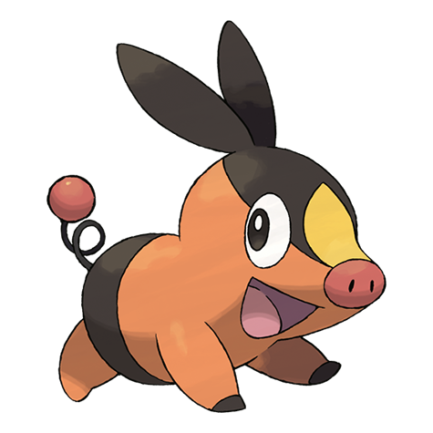

Follow the story mission by mission, explore a real Lumiose map, collect zone items, build your Pokédex and discover the legendary and mythical routes.
42 story & postgame missions20 Wild Zones16 Rogue Mega fights

001—042 / LUMIOSE CITY
YOUR FIELD DESK
Pick up where you left off.
Everything in one place, built for quick checks while you play.
Use the in-game city map with all 20 Wild Zones marked, then open each zone’s Pokémon, pickups and route notes.
BOTH POKÉDEXES
364 entries. Six stats each.
Search the Lumiose and Hyperspace rosters and compare types, HP, Attack, Defense, special stats and Speed.
✦
First time in Lumiose?
Choose the partner you like. Catch and train in daylight, then enter the red battle zone at night to earn your next promotion ticket. The guide follows the base-game story through Mission 42; Mega Dimension berries are labelled separately.
01 / THE STORY ROUTE
The complete mission route.
Follow every numbered mission from arrival to postgame. Check off what you finish; your place stays saved on this device.
42MISSIONS
One route for the whole adventure
Follow the mission, visit newly open Wild Zones, check nearby requests, then prepare for the next Royale match. The complete route continues through Mega Dimension and the final sweep.
After Mable gives you the Pokédex, claim research rewards from the X menu as you catch, evolve and survey Wild Zones. Her level 50 prize is the Shiny Charm.
Follow Pancham from the station into the first battle encounter.
Pick Chikorita, Tepig or Totodile, then win the fight to recover your bag.
PRACTICAL CHECKS
Pancham belongs to Andi: the opening fight is against its Trainer. Pick any of the three offered partners; the other two can be obtained later through the game or HOME.
FIELD TIPYour first partner is a preference pick; you can build a balanced team around any of the three.
8 mapped item pins nearbyTap a Poké Ball for its item and height clue.
Vert District · Wild Zone 1Tap a zone to see its full map and Alpha list.
Open Zone 01 close-up · items and climbs
Wild Zone 01 · enlarged areaAbout 5× the city map · pins aligned approximately
01
8 recorded item pinsTap a ball for the item and level clue; letters and screws mark approximate search areas.
Pokémon in Wild Zone 01 · 7 species
Tap a Pokémon for its Pokédex entry and return here using its Wild Zone link. Species may depend on time, weather or a specific spawn.
Follow this close-up
S
Vernal Avenue scaffoldStart: Vernal Avenue, just west of the Zone 1 outline
Stand on the street outside the west side of Wild Zone 1 and face the building line.
Find the visible scaffold frame from ground level; climb its lower supports, then check the upper platform.
Look for: Purple screw pickup on the scaffold; return to the street for the ordinary Zone 1 item sweep
When: Available during the early Vert District exploration
The pin locates a search area on a flat city map. The building entrance and roof level must be checked in the game; R is a roof target without a verified entry pin.
Visit newly open Wild Zones
Walk them in this order, then continue the story. Each close-up has climb clues, items and Alpha targets.
Learn how Ticket Points work in the night battle zone.
Win trainer battles until you receive a Challenger’s Ticket.
Meet your teammate near the Pokémon Center, then find Zach at the taxi lot for the promotion match.
PRACTICAL CHECKS
Zach leads with Slowpoke and also has Pidgey and Pikachu. Grass helps against Slowpoke and Electric helps against Pidgey; heal before starting the promotion.
FIELD TIPApproach unalerted trainers carefully and heal before the promotion fight.
No fixed Wild Zone opens in this mission. Follow the active in-game objective marker and collect any glowing item balls along your route.
05
The City in the Shadow of Prism TowerThe Royale · main story
MISSION 05 · YOUR ROUTE
Take the Hotel Z rooftop shortcut and break the Mega Crystals blocking the way.
Cross the rooftops, meet at the Nouveau Café truck near Centrico Plaza, then visit Emma’s detective agency.
Complete side missions 001, 002 and 003: Alpha Bunnelby, a Pikachu trade, and Sableye in the cemetery. Report back to Emma.
Wild Zones 2–6 open during this chapter; sweep their items and new Pokémon while travelling.
PRACTICAL CHECKS
Requests 1–3 are required here. Request 1 introduces the Alpha encounter; Request 2 trades a Pikachu for Heracross; Request 3 sends you into the cemetery for a lost item.
Wild Zones 2–6 open now. Check the zone links and return later for any roofs you cannot yet reach.
FIELD TIPActivate nearby travel points and collect the new Wild Zone pickups as you travel.
37 mapped item pins nearbyTap a Poké Ball for its item and height clue.
Across Lumiose · new Wild Zones 2–6Tap a zone to see its full map and Alpha list.
Open Zone 02 close-up · items and climbs
Wild Zone 02 · enlarged areaAbout 5× the city map · pins aligned approximately
02
4 recorded item pinsTap a ball for the item and level clue; letters and screws mark approximate search areas.
Pokémon in Wild Zone 02 · 6 species
Tap a Pokémon for its Pokédex entry and return here using its Wild Zone link. Species may depend on time, weather or a specific spawn.
How to use this close-up
Start at the numbered Wild Zone emblem and orient the streets to the enlarged map above.
Tap a Poké Ball pin to see the item name and level clue. Ground and roof pickups can overlap on a flat map.
No specific ladder, scaffold or Holovator entrance has been verified for this zone clip. Use the nearby sector map for other roof landmarks rather than treating a generic item pin as an access point.
Wild Zone 03 · enlarged areaAbout 5× the city map · pins aligned approximately
03
8 recorded item pinsTap a ball for the item and level clue; letters and screws mark approximate search areas.
Pokémon in Wild Zone 03 · 7 species
Tap a Pokémon for its Pokédex entry and return here using its Wild Zone link. Species may depend on time, weather or a specific spawn.
Follow this close-up
H
West-side HolovatorStart: West or southwest edge of Wild Zone 3
Finish Side Mission 4, A Break Time Battle, so the nearby Holovator works.
Ride it to the roof. Check the southern and northern scaffold branches for screws #25 and #26.
For #27, use the ladder on the north side of the roof, then cross the bridge to the higher rooftop.
Look for: Three separate pickups: southern scaffold, northern scaffold and upper roof · Screw #25, #26, #27
When: Holovator requires Side Mission 4
The pin locates a search area on a flat city map. The building entrance and roof level must be checked in the game; R is a roof target without a verified entry pin.
Open Zone 04 close-up · items and climbs
Wild Zone 04 · enlarged areaAbout 5× the city map · pins aligned approximately
04
6 recorded item pinsTap a ball for the item and level clue; letters and screws mark approximate search areas.
Pokémon in Wild Zone 04 · 6 species
Tap a Pokémon for its Pokédex entry and return here using its Wild Zone link. Species may depend on time, weather or a specific spawn.
Follow this close-up
L
West-side ladderStart: Street on the west side of Wild Zone 4
Face the building west of the zone and locate the scaffold ladder.
Climb for #37 on the scaffold, then continue to the higher roof for #36.
Look for: Do not stop at the nearest ledge; the roof pickup is a different height · Screw #36, #37
When: No special mission gate recorded for this climb
The pin locates a search area on a flat city map. The building entrance and roof level must be checked in the game; R is a roof target without a verified entry pin.
Open Zone 05 close-up · items and climbs
Wild Zone 05 · enlarged areaAbout 5× the city map · pins aligned approximately
05
14 recorded item pinsTap a ball for the item and level clue; letters and screws mark approximate search areas.
Pokémon in Wild Zone 05 · 12 species
Tap a Pokémon for its Pokédex entry and return here using its Wild Zone link. Species may depend on time, weather or a specific spawn.
How to use this close-up
Start at the numbered Wild Zone emblem and orient the streets to the enlarged map above.
Tap a Poké Ball pin to see the item name and level clue. Ground and roof pickups can overlap on a flat map.
No specific ladder, scaffold or Holovator entrance has been verified for this zone clip. Use the nearby sector map for other roof landmarks rather than treating a generic item pin as an access point.
Wild Zone 06 · enlarged areaAbout 5× the city map · pins aligned approximately
06
5 recorded item pinsTap a ball for the item and level clue; letters and screws mark approximate search areas.
Pokémon in Wild Zone 06 · 9 species
Tap a Pokémon for its Pokédex entry and return here using its Wild Zone link. Species may depend on time, weather or a specific spawn.
How to use this close-up
Start at the numbered Wild Zone emblem and orient the streets to the enlarged map above.
Tap a Poké Ball pin to see the item name and level clue. Ground and roof pickups can overlap on a flat map.
No specific ladder, scaffold or Holovator entrance has been verified for this zone clip. Use the nearby sector map for other roof landmarks rather than treating a generic item pin as an access point.
At night, enter the active Royale battle zone and earn enough Ticket Points for the next Challenger’s Ticket.
Heal and follow the promotion marker to Yvon, the office worker. Win the match to reach Rank X.
During daylight, revisit the newly opened Wild Zones for catches and useful items before the next ticket run.
PRACTICAL CHECKS
Yvon uses two Fairy Pokémon, Spritzee and Swirlix, followed by Vivillon. Poison or Steel helps against the first two; Rock is especially strong against Bug/Flying Vivillon.
FIELD TIPKeep type coverage across your party rather than relying on one starter.
No fixed Wild Zone opens in this mission. Follow the active in-game objective marker and collect any glowing item balls along your route.
07
Reaching Rank WThe Royale · main story
MISSION 07 · YOUR ROUTE
Battle Naveen when the story directs you to the team’s training bout.
Return to the active night battle zone and earn a Challenger’s Ticket.
Heal, then face Xavi for Rank W. Open the Royale opponent card below for his team and counters.
PRACTICAL CHECKS
Xavi uses Venipede, Roselia, Kadabra and Furfrou. Fire covers the first two, Dark helps against Kadabra and Fighting helps against Furfrou; protect the Fighting Pokémon from Kadabra.
FIELD TIPTop up healing items before entering the night zone.
No fixed Wild Zone opens in this mission. Follow the active in-game objective marker and collect any glowing item balls along your route.
08
Reaching Rank VThe Royale · main story
MISSION 08 · YOUR ROUTE
Return Lida’s forgotten things and battle her in the back-street practice lot.
Earn a fresh Challenger’s Ticket at night, then face Rintaro for the next rank.
PRACTICAL CHECKS
Rintaro brings Simisage, Simipour and Simisear: rotate Fire, Electric or Grass, and Water answers respectively. After the Rank V opponent is set, Mable’s request can award a Kanto starter once you have registered 30 Pokémon.
FIELD TIPUse the day cycle to catch a counter if your team has a shared weakness.
No fixed Wild Zone opens in this mission. Follow the active in-game objective marker and collect any glowing item balls along your route.
09
Chase That Mysterious PokémonThe Royale · main story
MISSION 09 · YOUR ROUTE
Follow the mysterious Zygarde through the streets and onto the rooftop; keep following the active marker if you lose sight of it.
AZ lends you Lucario and a Mega Ring for the Rogue Mega Absol battle. Attack to release Mega Power, collect the orbs and Mega Evolve Lucario.
Run out of Absol’s large Dark Pulse area, then use Lucario’s Aura Sphere or Rock Smash during its recovery. Return to the story thread after Absol calms down.
PRACTICAL CHECKS
Watch Absol’s expanding Dark Pulse and move the Trainer out of its area. Collect dropped Mega Power with the borrowed Lucario, then use its Fighting moves after you Mega Evolve.
FIELD TIPCollect Mega Power orbs, Mega Evolve Lucario and retreat from the large Dark Pulse before using Fighting moves.
No fixed Wild Zone opens in this mission. Follow the active in-game objective marker and collect any glowing item balls along your route.
10
The Secrets of Mega EvolutionThe Royale · main story
MISSION 10 · YOUR ROUTE
The next morning, battle your teammate to practise Mega Evolving Absol. Go to Quasartico Inc.; defeat the two security guards and meet Vinnie.
Earn a Challenger’s Ticket in the nighttime Battle Zone, then challenge Vinnie. Beat his Houndoom, Sharpedo and Buneary (Lv. 30) and Mega Drampa (Lv. 32) to jump from Rank V to Rank F.
AZ gives you your starter’s Mega Stone. Take the Slowbro, Camerupt and Victreebel reports; Wild Zones 7–10 open now, so use daylight to visit them before the next three boss cards.
Follow Missions 11–13 for the three Rogue Mega cases in any order. Once all three are done, return to Hotel Z, battle Zygarde, receive the mysterious Pebble and meet L.
PRACTICAL CHECKS
Vinnie’s last Pokémon is Mega Drampa; keep an Ice, Fighting or Fairy answer after handling Houndoom, Sharpedo and Buneary.
The Slowbro, Camerupt and Victreebel cases form a set. Check their separate mission cards and report back after all three are resolved.
FIELD TIPAZ gives you your starter’s Mega Stone; the Slowbro, Camerupt and Victreebel cases can be tackled in any order.
37 mapped item pins nearbyTap a Poké Ball for its item and height clue.
New Wild Zones 7–10 · citywideTap a zone to see its full map and Alpha list.
Open Zone 07 close-up · items and climbs
Wild Zone 07 · enlarged areaAbout 5× the city map · pins aligned approximately
07
4 recorded item pinsTap a ball for the item and level clue; letters and screws mark approximate search areas.
Pokémon in Wild Zone 07 · 9 species
Tap a Pokémon for its Pokédex entry and return here using its Wild Zone link. Species may depend on time, weather or a specific spawn.
How to use this close-up
Start at the numbered Wild Zone emblem and orient the streets to the enlarged map above.
Tap a Poké Ball pin to see the item name and level clue. Ground and roof pickups can overlap on a flat map.
No specific ladder, scaffold or Holovator entrance has been verified for this zone clip. Use the nearby sector map for other roof landmarks rather than treating a generic item pin as an access point.
Wild Zone 08 · enlarged areaAbout 5× the city map · pins aligned approximately
08
5 recorded item pinsTap a ball for the item and level clue; letters and screws mark approximate search areas.
Pokémon in Wild Zone 08 · 7 species
Tap a Pokémon for its Pokédex entry and return here using its Wild Zone link. Species may depend on time, weather or a specific spawn.
Follow this close-up
S
North-side roof sweepStart: North edge of Wild Zone 8; then Jaune Sector 3
Search the small enclosed block directly north of the zone for #80.
For #84, take a separate detour toward the Jaune Sector 3 roof on the Wild Zone 8 side. Look for the local scaffold or roof approach.
Look for: One enclosed ground-level search and one rooftop pickup, not one continuous pin · Screw #80, #84
When: Return when the nearby rooftop route is accessible
The pin locates a search area on a flat city map. The building entrance and roof level must be checked in the game; R is a roof target without a verified entry pin.
Open Zone 09 close-up · items and climbs
Wild Zone 09 · enlarged areaAbout 5× the city map · pins aligned approximately
09
20 recorded item pinsTap a ball for the item and level clue; letters and screws mark approximate search areas.
Pokémon in Wild Zone 09 · 8 species
Tap a Pokémon for its Pokédex entry and return here using its Wild Zone link. Species may depend on time, weather or a specific spawn.
How to use this close-up
Start at the numbered Wild Zone emblem and orient the streets to the enlarged map above.
Tap a Poké Ball pin to see the item name and level clue. Ground and roof pickups can overlap on a flat map.
No specific ladder, scaffold or Holovator entrance has been verified for this zone clip. Use the nearby sector map for other roof landmarks rather than treating a generic item pin as an access point.
Wild Zone 10 · enlarged areaAbout 5× the city map · pins aligned approximately
10
8 recorded item pinsTap a ball for the item and level clue; letters and screws mark approximate search areas.
Pokémon in Wild Zone 10 · 8 species
Tap a Pokémon for its Pokédex entry and return here using its Wild Zone link. Species may depend on time, weather or a specific spawn.
Follow this close-up
S
Western scaffoldStart: Outer street west of Wild Zone 10
Walk along the building edge west of the zone rather than following the waterside path.
Spot the scaffold frame and climb from street level, checking the upper platform.
Look for: Colorful Screw #65 on the western scaffold · Screw #65
When: Available when this part of Bleu District opens
The pin locates a search area on a flat city map. The building entrance and roof level must be checked in the game; R is a roof target without a verified entry pin.
Visit newly open Wild Zones
Walk them in this order, then continue the story. Each close-up has climb clues, items and Alpha targets.
Follow the Rogue Mega marker to Slowbro’s island arena in Bleu District.
Keep moving around the island to avoid its splash and whirlpool attacks. Strike with Electric or Grass moves when Slowbro settles.
Collect the Mega Stone reward and return to your remaining active cases.
PRACTICAL CHECKS
Slowbro is Water/Psychic: Electric and Grass hit its Water half, while Dark or Ghost hits its Psychic half. Move along the island edge to avoid the spreading whirlpools.
FIELD TIPGrass or Electric damage pressures its Water typing; keep moving during large attacks.
No fixed Wild Zone opens in this mission. Follow the active in-game objective marker and collect any glowing item balls along your route.
12
A Rogue Mega CameruptMega mysteries · main story
MISSION 12 · YOUR ROUTE
Follow the Jaune District marker and climb the visible scaffold route to Camerupt’s rooftop arena.
Clear the chain of volcanic rocks before it explodes; Water deals 4× damage to Fire/Ground Camerupt.
Take the boss reward and continue whichever Rogue Mega case remains.
PRACTICAL CHECKS
The scaffolding approach includes Trainer challenges before the rooftop fight. Camerupt is Fire/Ground and takes fourfold Water damage; leave the rock chain before it ignites.
FIELD TIPWater is especially strong against its Fire/Ground typing. Avoid the chain of exploding rocks.
No fixed Wild Zone opens in this mission. Follow the active in-game objective marker and collect any glowing item balls along your route.
14
Reaching Rank EMega mysteries · main story
MISSION 14 · YOUR ROUTE
Outside Hotel Z, beat Naveen (Canari’s top fan) to get his help. Earn a Challenger’s Ticket in the nighttime Battle Zones, then speak to Naveen again.
Meet Naveen near the Electrical Substation in Magenta District. He gives you the admission code. Speak to the guard before entering and choose the three words separately: “Let’s” → “go” → “DYN4MO!” This is the entry password, not the first true/false question.
Inside the contest, stand on ✓ for True (falling-block games), × for False (macarons), and ✓ for True (Electric-type Pokémon); confirm each choice.
For round two, go to Café Gallant in Magenta Sector 1. Speak to the waiter; Naveen gives you the Super Lumiose Galette, a Key Item for Eelektross. Return to the Electrical Substation and present it at the contest stage.
Defeat fellow fan Mani (Helioptile Lv. 34, Emolga Lv. 34, Raichu Lv. 35) for the right to answer the final question. Choose “Her grandpa” (option 4) for the childhood laptop, then ask for a promotion match.
Follow the marker to Racine Construction in Vert Sector 6. Go inside and defeat Tarragon, Canari’s grandfather (Hippowdon Lv. 36, Diggersby Lv. 36, Mega Excadrill Lv. 37). This battle is required before Canari.
Investigate the small room in the garage and talk to Canari. Win her Rank E promotion match against Heliolisk Lv. 37, Ampharos Lv. 38, Stunfisk Lv. 38 and Mega Eelektross Lv. 39.
PRACTICAL CHECKS
The admission password, true/false round, galette errand, Mani battle, grandpa answer, Tarragon battle and Canari fight happen in that order. Heal between the last two battles.
FIELD TIPBring Ground coverage for Electric threats, with a backup answer to her wider team.
No fixed Wild Zone opens in this mission. Follow the active in-game objective marker and collect any glowing item balls along your route.
15
A Job for Team MZMega mysteries · main story
MISSION 15 · YOUR ROUTE
Start the Team MZ strategy meeting at Hotel Z and join your teammate on the rooftops. Learn Roto-Glide for the roof gaps.
Wild Zones 11–13 open now; visit them during daylight for catches, items and a useful counter before taking on the next cases.
Follow Missions 16–18 for Beedrill, Hawlucha and Banette in any order. Prepare separately for each arena, then return to Hotel Z once all three are complete.
PRACTICAL CHECKS
Beedrill, Hawlucha and Banette are separate Rogue Mega cases. Bring different answers and finish all three before expecting the next promotion to begin.
FIELD TIPYou can prepare a different counter before each marked case.
20 mapped item pins nearbyTap a Poké Ball for its item and height clue.
New Wild Zones 11–13 · citywideTap a zone to see its full map and Alpha list.
Open Zone 11 close-up · items and climbs
Wild Zone 11 · enlarged areaAbout 5× the city map · pins aligned approximately
11
5 recorded item pinsTap a ball for the item and level clue; letters and screws mark approximate search areas.
Pokémon in Wild Zone 11 · 8 species
Tap a Pokémon for its Pokédex entry and return here using its Wild Zone link. Species may depend on time, weather or a specific spawn.
How to use this close-up
Start at the numbered Wild Zone emblem and orient the streets to the enlarged map above.
Tap a Poké Ball pin to see the item name and level clue. Ground and roof pickups can overlap on a flat map.
No specific ladder, scaffold or Holovator entrance has been verified for this zone clip. Use the nearby sector map for other roof landmarks rather than treating a generic item pin as an access point.
Wild Zone 12 · enlarged areaAbout 5× the city map · pins aligned approximately
12
8 recorded item pinsTap a ball for the item and level clue; letters and screws mark approximate search areas.
Pokémon in Wild Zone 12 · 10 species
Tap a Pokémon for its Pokédex entry and return here using its Wild Zone link. Species may depend on time, weather or a specific spawn.
Follow this close-up
H
Park-to-plaza HolovatorStart: Between Wild Zones 12 and 16
Find the Holovator between the two zone outlines and ride it upward.
From its roof, move along the western edge of Wild Zone 12 and inspect the roofline.
Look for: Colorful Screw #54 on the roof west of Zone 12 · Screw #54
When: Use the Holovator after its route becomes available
The pin locates a search area on a flat city map. The building entrance and roof level must be checked in the game; R is a roof target without a verified entry pin.
Open Zone 13 close-up · items and climbs
Wild Zone 13 · enlarged areaAbout 5× the city map · pins aligned approximately
13
7 recorded item pinsTap a ball for the item and level clue; letters and screws mark approximate search areas.
Pokémon in Wild Zone 13 · 7 species
Tap a Pokémon for its Pokédex entry and return here using its Wild Zone link. Species may depend on time, weather or a specific spawn.
Follow this close-up
S
Western scaffold tiersStart: Street west of Wild Zone 13
Find the scaffold on the west side and climb deliberately through its levels.
Collect #33 on the lower section before you go higher for #32.
From the upper area, search the rooftops along the south side for #34.
Look for: Lower scaffold, upper scaffold and south-side roof are distinct stops · Screw #32, #33, #34
When: Available when Wild Zone 13 and adjacent streets open
The pin locates a search area on a flat city map. The building entrance and roof level must be checked in the game; R is a roof target without a verified entry pin.
Visit newly open Wild Zones
Walk them in this order, then continue the story. Each close-up has climb clues, items and Alpha targets.
Meet your teammate on the rooftops behind Hotel Z.
Learn Roto-Glide and cross the rooftop gaps.
Reach the Beedrill arena; revisit earlier roofs later for screws and TMs that needed the glide.
PRACTICAL CHECKS
Use the newly taught Roto-Glide to cross the roof gaps. Beedrill is Bug/Poison; Fire, Flying, Psychic or Rock moves pressure it while you dodge its fast pin volley.
FIELD TIPRock, Fire, Flying or Psychic attacks work well; dodge quick lunges before committing.
No fixed Wild Zone opens in this mission. Follow the active in-game objective marker and collect any glowing item balls along your route.
19
Reaching Rank DSyndicate · main story
MISSION 19 · YOUR ROUTE
Earn a Challenger’s Ticket in the nighttime Battle Zone. Head to the Justice Dojo southwest of Wild Zone 8 and accept Josee’s challenge. She uses Machoke and Medicham, both Lv. 43. Win to receive one Seed of Mastery. Josee (Josée in-game) explains that you can come back to the dojo and give her a Seed of Mastery to turn an eligible Pokémon move into a Plus Move.
When Ivor arrives looking for Gwynn, go to the Looker Bureau and speak with Emma. Then meet Ivor outside City Hall in Jaune Sector 9. Emma asks you to question people nearby about Gwynn.
Start with the man to your right outside City Hall who mentions someone missing, then the man farther along who says he’s found her. Continue behind City Hall toward the scaffolding and fountain. A boy nearby offers to help. For the lead you need, speak to the person beside the fountain whose speech bubble mentions the Fist of Justice. You’ll learn that Gwynn visits a café by Centrico Plaza with a friend.
Fast-travel to Nouveau Café by Centrico Plaza and approach Ivor to trigger the scene. Choose “Possibly Canari”, then “We could visit Racine Construction”.
Fast-travel to Racine Construction in Vert Sector 6. Pick up the Colorful Screw behind the reception desk if it’s still there, then go through the door on the right to find Ivor with Canari. Win the rematch against Heliolisk (Lv. 42), Ampharos (Lv. 43), Stunfisk (Lv. 43) and Mega Eelektross (Lv. 44) to hear Canari’s fountain clue. Choose Clawitzer when asked which Pokémon the clue points to.
Go to the Clawitzer fountain’s courtyard in Bleu Sector 7, near Bleu Pokémon Center. Tell Emma you’re sure Gwynn came here and suggest stopping the water. Target the fountain with Ice Beam, then enter the Lumiose Sewers through the nearby door. If you need Ice Beam, collect TM013 in Wild Zone 12 and teach it to a compatible Pokémon.
Follow the mission marker to the locked sewer gate and examine the lock. Follow Klefki and catch it with the Ultra Balls Emma gives you. Ivor opens the gate when Klefki’s key doesn’t fit. Continue until you catch up with Emma and Ivor, then follow Chandelure deeper into the sewers.
At the apparent dead end, investigate all four suspicious spots: the pipes with valve wheels, the row of four machines along the wall, the electrical panels near the corner, and the pale crates in the stack. This triggers the scene that reveals the illusory wall. Walk straight through that wall and follow Chandelure down the next corridor.
Speak to Gwynn and defeat her Banette (Lv. 43), Gourgeist (Lv. 44) and Mega Chandelure (Lv. 45). Then return to the Justice Dojo and defeat Ivor in the Rank D promotion match.
PRACTICAL CHECKS
At City Hall, the person with an Aegislash looking for a Furfrou and the bystanders talking about “that girl”, Ivor or general trouble in Lumiose can be skipped. The Fist of Justice clue by the fountain advances the search.
Bring Dark-type moves for Gwynn’s Ghost Pokémon, then heal and prepare for Ivor’s Fighting team before the promotion.
FIELD TIPIf Chandelure leads you to a dead end in the sewers, inspect all four marked spots and walk through the illusory wall.
No fixed Wild Zone opens in this mission. Follow the active in-game objective marker and collect any glowing item balls along your route.
20
A Request from the Rust SyndicateSyndicate · main story
MISSION 20 · YOUR ROUTE
Go with Lida to the Rust Syndicate office. Defeat the two grunts and Philippe, then meet Corbeau about Taunie/Urbain’s debt. Return to Hotel Z for Vinnie’s call.
Wild Zones 14 and 15 open now. Survey them during daylight, then follow Missions 21–23 for the Mawile, Barbaracle and Ampharos cases in any order.
When Corbeau calls after the three cases, clear the Ghost Pokémon from the old house. Then enter the sewers via Saison Canal and destroy all the Mega Crystals there.
Defeat the SBC trainers bothering the children, then help protect President Jett from the angry crowd. Return to Corbeau after the assigned jobs.
PRACTICAL CHECKS
Corbeau’s debt story continues after the three Mega cases. Check the mission log for the old-house, sewer-crystal, SBC and Jett objectives before returning to the Syndicate.
FIELD TIPRead each active map marker: this mission branches into several errands.
10 mapped item pins nearbyTap a Poké Ball for its item and height clue.
New Wild Zones 14–15 · Syndicate errandsTap a zone to see its full map and Alpha list.
Open Zone 14 close-up · items and climbs
Wild Zone 14 · enlarged areaAbout 5× the city map · pins aligned approximately
14
5 recorded item pinsTap a ball for the item and level clue; letters and screws mark approximate search areas.
Pokémon in Wild Zone 14 · 7 species
Tap a Pokémon for its Pokédex entry and return here using its Wild Zone link. Species may depend on time, weather or a specific spawn.
Follow this close-up
S
Southern scaffoldStart: Street immediately south of Wild Zone 14
Climb the scaffold south of the zone. Check partway up for #92.
Continue to its top for #93, then return to street level.
Search the separate scaffold west of the zone for #94.
Look for: Two heights on the southern scaffold, one western branch · Screw #92, #93, #94
When: Available when Wild Zone 14 opens
The pin locates a search area on a flat city map. The building entrance and roof level must be checked in the game; R is a roof target without a verified entry pin.
Open Zone 15 close-up · items and climbs
Wild Zone 15 · enlarged areaAbout 5× the city map · pins aligned approximately
15
5 recorded item pinsTap a ball for the item and level clue; letters and screws mark approximate search areas.
Pokémon in Wild Zone 15 · 11 species
Tap a Pokémon for its Pokédex entry and return here using its Wild Zone link. Species may depend on time, weather or a specific spawn.
How to use this close-up
Start at the numbered Wild Zone emblem and orient the streets to the enlarged map above.
Tap a Poké Ball pin to see the item name and level clue. Ground and roof pickups can overlap on a flat map.
No specific ladder, scaffold or Holovator entrance has been verified for this zone clip. Use the nearby sector map for other roof landmarks rather than treating a generic item pin as an access point.
No fixed Wild Zone opens in this mission. Follow the active in-game objective marker and collect any glowing item balls along your route.
24
Reaching Rank CSyndicate · main story
MISSION 24 · YOUR ROUTE
Enter the active night battle zone, gather Ticket Points and secure a Challenger’s Ticket.
Heal your whole party and follow the promotion marker to Corbeau of the Rust Syndicate.
Win the Rank C match; open the opponent card below for his team and a move-by-move plan.
PRACTICAL CHECKS
Corbeau uses Arbok, Gyarados, Roserade and Mega Scolipede. Ground helps against Arbok and Scolipede, Electric is fourfold effective against Gyarados, and Fire helps against Roserade.
FIELD TIPHeal and stock revives before accepting the promotion match.
16 mapped item pins nearbyTap a Poké Ball for its item and height clue.
New Wild Zones 16–17 · Battle CourtTap a zone to see its full map and Alpha list.
Open Zone 16 close-up · items and climbs
Wild Zone 16 · enlarged areaAbout 5× the city map · pins aligned approximately
16
8 recorded item pinsTap a ball for the item and level clue; letters and screws mark approximate search areas.
Pokémon in Wild Zone 16 · 8 species
Tap a Pokémon for its Pokédex entry and return here using its Wild Zone link. Species may depend on time, weather or a specific spawn.
How to use this close-up
Start at the numbered Wild Zone emblem and orient the streets to the enlarged map above.
Tap a Poké Ball pin to see the item name and level clue. Ground and roof pickups can overlap on a flat map.
No specific ladder, scaffold or Holovator entrance has been verified for this zone clip. Use the nearby sector map for other roof landmarks rather than treating a generic item pin as an access point.
Wild Zone 17 · enlarged areaAbout 5× the city map · pins aligned approximately
17
8 recorded item pinsTap a ball for the item and level clue; letters and screws mark approximate search areas.
Pokémon in Wild Zone 17 · 7 species
Tap a Pokémon for its Pokédex entry and return here using its Wild Zone link. Species may depend on time, weather or a specific spawn.
Follow this close-up
R
Eastern roof targetStart: East side of Wild Zone 17
Use the zone emblem to identify the eastern building row.
Inspect the roof and its neighbouring building access in game; the map marker identifies the target area, not a verified scaffold entrance.
Look for: Colorful Screw #17 on the eastern rooftop · Screw #17
When: Use the local roof route; only attempt a glide where the gap allows
The pin locates a search area on a flat city map. The building entrance and roof level must be checked in the game; R is a roof target without a verified entry pin.
Visit newly open Wild Zones
Walk them in this order, then continue the story. Each close-up has climb clues, items and Alpha targets.
An Invitation from the SBCFinal climb · main story
MISSION 26 · YOUR ROUTE
After the Team MZ battles, meet Lebanne at the Nouveau Café truck and accept Jacinthe’s invitation to Hotel Richissime.
Visit Boutique Couture on Verdant Avenue for a suitable outfit, then go to Hotel Richissime and join the gathering.
Vinnie calls before the tournament. Follow Missions 27–29 for the Froslass, Altaria and Venusaur cases in any order; only then return to Jacinthe’s tournament in Mission 30.
PRACTICAL CHECKS
The invitation comes before the three new Rogue Mega cases. Visit Boutique Couture and Hotel Richissime, then resolve Froslass, Altaria and Venusaur before returning for Jacinthe’s tournament.
FIELD TIPClear the three map markers before returning to the tournament.
No fixed Wild Zone opens in this mission. Follow the active in-game objective marker and collect any glowing item balls along your route.
28
A Rogue Mega AltariaFinal climb · main story
MISSION 28 · YOUR ROUTE
Follow the Magenta District marker to Altaria’s arena.
Dodge between the outward Twister cyclones. Mega Altaria is Dragon/Fairy: Steel or Poison hits it, and Dragon attacks do not.
Collect the reward and resume the other active reports.
PRACTICAL CHECKS
Mega Altaria becomes Dragon/Fairy, which is immune to Dragon damage. Move through gaps between its cyclones and use Steel or Poison; Ice and Fairy also hit its Dragon side.
FIELD TIPIts Mega form is Dragon/Fairy; use Ice, Poison, Steel or Fairy moves.
No fixed Wild Zone opens in this mission. Follow the active in-game objective marker and collect any glowing item balls along your route.
30
Reaching Rank BFinal climb · main story
MISSION 30 · YOUR ROUTE
Get a Challenger’s Ticket. Before the tournament at Hotel Richissime, defeat Lebanne when she intercepts you.
Win the tournament rounds against Canari, Ivor and Corbeau. Heal and adjust counters between rounds.
L and Zygarde interrupt the bracket: defeat Zygarde in its 50% Forme, then face Jacinthe and her Mega Clefable for Rank B.
PRACTICAL CHECKS
The Rank B tournament runs through Canari, Ivor and Corbeau before the Zygarde interruption and Jacinthe. Plan for several teams and a Mega Clefable finish.
FIELD TIPPrepare a full party; check whether your own Mega Stone is equipped.
14 mapped item pins nearbyTap a Poké Ball for its item and height clue.
New Wild Zones 18–19 · promotionTap a zone to see its full map and Alpha list.
Open Zone 18 close-up · items and climbs
Wild Zone 18 · enlarged areaAbout 5× the city map · pins aligned approximately
18
5 recorded item pinsTap a ball for the item and level clue; letters and screws mark approximate search areas.
Pokémon in Wild Zone 18 · 8 species
Tap a Pokémon for its Pokédex entry and return here using its Wild Zone link. Species may depend on time, weather or a specific spawn.
How to use this close-up
Start at the numbered Wild Zone emblem and orient the streets to the enlarged map above.
Tap a Poké Ball pin to see the item name and level clue. Ground and roof pickups can overlap on a flat map.
No specific ladder, scaffold or Holovator entrance has been verified for this zone clip. Use the nearby sector map for other roof landmarks rather than treating a generic item pin as an access point.
Wild Zone 19 · enlarged areaAbout 5× the city map · pins aligned approximately
19
9 recorded item pinsTap a ball for the item and level clue; letters and screws mark approximate search areas.
Pokémon in Wild Zone 19 · 7 species
Tap a Pokémon for its Pokédex entry and return here using its Wild Zone link. Species may depend on time, weather or a specific spawn.
Follow this close-up
S
Eastern scaffoldStart: Street east of Wild Zone 19
Locate the scaffold east of the zone and climb it for #76.
Treat the Jaune Sector 5 roof near the zone as a separate sweep for #79.
Look for: An eastern scaffold pickup and a different nearby roof · Screw #76, #79
When: Available when Wild Zone 19 opens
The pin locates a search area on a flat city map. The building entrance and roof level must be checked in the game; R is a roof target without a verified entry pin.
Visit newly open Wild Zones
Walk them in this order, then continue the story. Each close-up has climb clues, items and Alpha targets.
No fixed Wild Zone opens in this mission. Follow the active in-game objective marker and collect any glowing item balls along your route.
32
A Rogue Mega DragoniteFinal climb · main story
MISSION 32 · YOUR ROUTE
Follow Dragonite’s marker to the Vert District arena.
Dodge Hurricane and the later Hyper Beam warning before committing to an attack. Ice deals 4× to Dragon/Flying Dragonite.
Claim the Mega Stone and return to the remaining Vinnie reports.
PRACTICAL CHECKS
Dragonite is Dragon/Flying and takes fourfold Ice damage. Save a dodge for its later Hyper Beam instead of remaining in the centre while charging a move.
FIELD TIPIce is especially effective against Dragon/Flying; Fairy and Rock also help.
No fixed Wild Zone opens in this mission. Follow the active in-game objective marker and collect any glowing item balls along your route.
35
Reaching Rank AFinale · main story
MISSION 35 · YOUR ROUTE
At the Looker Bureau, beat Emma so she will share what she knows about Grisham. Ask Mable at the Pokémon Research Lab, then request a meeting at the Nouveau Café truck.
Go to the disused Lysandre Café and defeat Griselle. Enter the hidden Lysandre Labs, find the key cards and Elevator Key, then reach B3F and inspect the records.
After L explains the tower, return to Hotel Z for AZ’s rooftop account. Earn a Challenger’s Ticket and challenge Grisham for Rank A. He uses six Pokémon and finishes with Mega Charizard X.
PRACTICAL CHECKS
Lysandre Labs is a story stop before Grisham, so inspect the records on B3F and return to Hotel Z before earning the ticket.
Grisham brings six Pokémon, with Mega Charizard X last. Save Rock, Dragon or Ground coverage for its Fire/Dragon typing.
FIELD TIPFinish side preparation now; the story moves directly toward Prism Tower.
No fixed Wild Zone opens in this mission. Follow the active in-game objective marker and collect any glowing item balls along your route.
36
Prism Tower’s Dark TurnFinale · main story
MISSION 36 · YOUR ROUTE
Meet everyone at Prism Tower and battle your teammate.
Speak to Vinnie about the operation, then descend from the rooftops to assess the situation below.
Restock healing items and save before committing to the final operation.
Additional verified mission transition: After this chapter ends, the Ivor-and-Gwynn ally battle is part of Mission 37, not the Mission 36 teammate duel. Follow the next active objective marker instead of heading straight to the tower.
PRACTICAL CHECKS
Use this chapter to prepare before the finale: restore the party and check healing items after the teammate battle and before starting the operation.
FIELD TIPStock healing and revives and save before the finale sequence.
No fixed Wild Zone opens in this mission. Follow the active in-game objective marker and collect any glowing item balls along your route.
37
Operation Protect LumioseFinale · main story
MISSION 37 · YOUR ROUTE
Follow the allies in sequence through the city: Ivor and Gwynn, Canari’s group, Jacinthe and Lebanne, then Corbeau.
Additional researched route detail: Follow the Mission 37 marker south to the dead end, turn left through the park and approach Ivor and Gwynn. Together you face three level-62 Rogue Mega Pokémon at once: Mega Pidgeot, Mega Kangaskhan and Mega Garchomp.
Counter moves and survival: Ice moves hit Mega Pidgeot and are 4× effective against Dragon/Ground Mega Garchomp; Electric or Rock moves also work on Pidgeot. Use Fighting moves against Normal-type Mega Kangaskhan. Ice Beam, Thunderbolt and Brick Break are examples only if your Pokémon know them. Draw one opponent away while Ivor and Gwynn distract the others, dodge the attack markers and heal between waves.
Next ally checkpoint: Follow Ivor over the temporary bridge, use the stairs and canal-side walkway, then meet Canari and Tarragon for the Mega Blastoise and Mega Steelix encounter before the scaffolding climb.
Cross the scaffolding and rooftops to reach Zygarde.
During Ange, destroy both flowers three times and shelter beneath Complete Forme Zygarde when Light of Ruin fires.
Follow the final Zygardite prompt to stop the blast.
PRACTICAL CHECKS
Follow each ally’s new marker rather than heading straight for the tower. During Ange, clear both flowers three times, then shelter under Complete Forme Zygarde when Light of Ruin charges.
FIELD TIPThe flowers must be cleared three times so Core Enforcer can charge. Keep the player character out of the beam.
No fixed Wild Zone opens in this mission. Follow the active in-game objective marker and collect any glowing item balls along your route.
38
The Future of Lumiose CityPostgame · postgame
MISSION 38 · YOUR ROUTE
After the credits, go to the Hotel Z lobby and speak with your teammate.
Meet Jett and Vinnie at Prism Tower, discuss the wish and register for the Infinite Z-A Royale. With Mega Dimension installed, check Hotel Z’s roof for Side Mission 120 after this postgame introduction; Missions 39–42 can be completed separately.
PRACTICAL CHECKS
This chapter starts the postgame. Once you finish it and own the installed DLC, check Hotel Z’s roof for Ansha’s request; the legendary investigations in Missions 40–42 are a separate postgame branch.
Own Mega Dimension? After this postgame introduction, check Hotel Z’s roof for Side Mission 120. Meet Ansha on the Hotel Z roof to begin the DLC. DLC starting route
No fixed Wild Zone opens in this mission. Follow the active in-game objective marker and collect any glowing item balls along your route.
39
The Infinite Z-A RoyalePostgame · postgame
MISSION 39 · YOUR ROUTE
Enter the Infinite Z-A Royale. Earn Challenger’s Tickets at night and take reward matches; Wild Zone 20 opens around Prism Tower.
After your 15th reward match, battle Taunie/Urbain’s team and Mega Floette. This resolves their family thread and leads to receiving Floette. Continue repeatable matches for the remaining rewards.
PRACTICAL CHECKS
Wild Zone 20 opens with this mission. At the 15th reward match, beat your teammate’s Mega Floette team to resolve the Floette story; other Infinite Royale rewards continue afterward.
FIELD TIPUse repeatable matches to train for the remaining legendary missions.
4 mapped item pins nearbyTap a Poké Ball for its item and height clue.
Centrico Plaza · Wild Zone 20Tap a zone to see its full map and Alpha list.
Open Zone 20 close-up · items and climbs
Wild Zone 20 · enlarged areaAbout 5× the city map · pins aligned approximately
20
4 recorded item pinsTap a ball for the item and level clue; letters and screws mark approximate search areas.
Pokémon in Wild Zone 20 · 73 species
Tap a Pokémon for its Pokédex entry and return here using its Wild Zone link. Species may depend on time, weather or a specific spawn.
Follow this close-up
G
Western rooftop returnStart: Rooftops west of Centrico Plaza
Approach the western roofline outside the Zone 20 circle.
Use the local climb route; if the gap blocks you, return after Roto-Glide opens in Mission 16.
Look for: Colorful Screw #85 west of the central plaza · Screw #85
When: Roto-Glide opens in Mission 16
The pin locates a search area on a flat city map. The building entrance and roof level must be checked in the game; R is a roof target without a verified entry pin.
Visit newly open Wild Zones
Walk them in this order, then continue the story. Each close-up has climb clues, items and Alpha targets.
After the main story, talk to Mable about Xerneas.
Clear anomalous Alphas in Wild Zones 3, 5 and 9, then go to Wild Zone 11 and catch Xerneas.
PRACTICAL CHECKS
Clear the anomalous Alpha encounters in Wild Zones 3, 5 and 9 before the Xerneas encounter in Wild Zone 11. Check the listed zones instead of searching the whole city.
FIELD TIPBring a healthy, varied team and save before the legendary battle.
5 mapped item pins nearbyTap a Poké Ball for its item and height clue.
Wild Zone 11 · XerneasTap a zone to see its full map and Alpha list.
Open Zone 11 close-up · items and climbs
Wild Zone 11 · enlarged areaAbout 5× the city map · pins aligned approximately
11
5 recorded item pinsTap a ball for the item and level clue; letters and screws mark approximate search areas.
Pokémon in Wild Zone 11 · 8 species
Tap a Pokémon for its Pokédex entry and return here using its Wild Zone link. Species may depend on time, weather or a specific spawn.
How to use this close-up
Start at the numbered Wild Zone emblem and orient the streets to the enlarged map above.
Tap a Poké Ball pin to see the item name and level clue. Ground and roof pickups can overlap on a flat map.
No specific ladder, scaffold or Holovator entrance has been verified for this zone clip. Use the nearby sector map for other roof landmarks rather than treating a generic item pin as an access point.
No fixed Wild Zone opens in this mission. Follow the active in-game objective marker and collect any glowing item balls along your route.
42
To Keep the World in BalancePostgame · postgame
MISSION 42 · YOUR ROUTE
With Xerneas and Yveltal caught, return to Hotel Z and defeat L.
Follow Zygarde toward Prism Tower and face its 10%, 50% and Complete Forme phases.
Avoid the Z-shaped Core Enforcer danger zone, finish the fight and catch Zygarde.
PRACTICAL CHECKS
Xerneas and Yveltal must be caught before L’s battle and the Zygarde encounter. If you have not begun Mega Dimension yet, Side Mission 120 is on Hotel Z’s roof once the DLC is installed; Mission 42 is not the only DLC entry point.
FIELD TIPPrepare Ice or Fairy coverage and expect the battle to change form.
4 mapped item pins nearbyTap a Poké Ball for its item and height clue.
Wild Zone 20 · ZygardeTap a zone to see its full map and Alpha list.
Open Zone 20 close-up · items and climbs
Wild Zone 20 · enlarged areaAbout 5× the city map · pins aligned approximately
20
4 recorded item pinsTap a ball for the item and level clue; letters and screws mark approximate search areas.
Pokémon in Wild Zone 20 · 73 species
Tap a Pokémon for its Pokédex entry and return here using its Wild Zone link. Species may depend on time, weather or a specific spawn.
Follow this close-up
G
Western rooftop returnStart: Rooftops west of Centrico Plaza
Approach the western roofline outside the Zone 20 circle.
Use the local climb route; if the gap blocks you, return after Roto-Glide opens in Mission 16.
Look for: Colorful Screw #85 west of the central plaza · Screw #85
When: Roto-Glide opens in Mission 16
The pin locates a search area on a flat city map. The building entrance and roof level must be checked in the game; R is a roof target without a verified entry pin.
Track all 200 numbered requests and three EX missions. Requests 1–3 advance Mission 5, and request 120 begins the DLC. Search by name or number for verified steps where available.
203REQUESTS
#001 · Alpha Bunnelby
Complete “A Big Ol’ Bunnelby” to introduce Alpha encounters.
#007–009 · Kalos starters
Chespin, Fennekin and Froakie have early optional missions.
#120 · Mega Dimension
Ansha’s donut request begins the expansion’s route.
#200 · Final request
“Here in Lumiose City” unlocks after the earlier numbered requests.
OPTIONAL PROGRESS0 of 203 complete
#1A Big Ol' BunnelbyField notes ↓
Unlock: Agree to help Emma
Start: Rouge Sector 6
Reward: Fresh Water
Exact solution:
Talk to Trevelle in Rouge Sector 6, then enter the marked alley. Battle or catch the level 10 Alpha Bunnelby. Report back; this request opens Alpha encounters elsewhere in Lumiose.
Catch a Pikachu in Wild Zone 3 or 6. Go to Tracie in Passage du Palais, off Rouge Street, and trade it for her level 12 Heracross. The trade completes the request.
At the broken Holovator by Rouge Plaza in Rouge Sector 1, challenge worker Sommi on his break. Defeat his Pidgey, Budew and Emolga; he repairs the lift after the battle.
Find Distan in Bleu Sector 4 and accept his long-range-move challenge. Defeat his Binacle, Fletchling and Skiddo; their Water Gun, Ember and Razor Leaf can hit from a distance.
Speak to Jardin in Magenta Sector 2 about the sick Fennekin. Ask at Café Classe, then find the Revitalizing Twig in Wild Zone 5 near the Alpha Whirlipede. Return to Jardin and receive Fennekin.
Meet Surv at the Jaune Sector 8 construction site. Beat Froakie on the first scaffolding course within 30 seconds, clear the second course within 40 seconds, then finish the North Boulevard course within 50 seconds to receive Froakie.
Catch Skiddo in Wild Zone 3, add it to your party and show it to perfumer Odette on Vernal Avenue. She borrows some leaves for a new fragrance and returns your Skiddo.
Show Vivace on South Boulevard each of the five Flabébé flower colours separately: red, orange, yellow, white and blue. Red appears in Wild Zone 3; orange is on roofs near Wild Zone 6, yellow by the bridge south of Zone 6, white in a courtyard northeast of Zone 2, and blue on rooftops by Zone 3.
Return after each colour to unlock that hair dye. The fifth also unlocks aqua, purple and passion pink, then completes the request.
Start: Use the active mission marker; the request moves with story progress
Reward: Nest Ball
Exact solution:
Use a Fire-type or cutting move to remove the brambles around the artist's fountain. Speak to her, clear the next three brambles, speak again and clear the final five. The Phantump causing the growth appears and inspires her painting.
Meet Slurpuff and its owner outside the café in Bleu Sector 10. Walk with Slurpuff to Café Soleil and let it enjoy its usual treats; the visit resolves its quarrel with the owner.
Speak with Hea in Rouge Sector 1 and defeat her level 20 Audino. The battle helps Hea recognise that she is exhausted and why Audino has been fussing over her.
Start: Vernal Pokémon Center → Bleu Sector 8 fountain
Reward: Miracle Seed
Exact solution:
Start with Jardin inside Vernal Pokémon Center. Catch a Budew in Wild Zone 2 if needed, put it in your party and bring ₽5,800 to the show at the fountain in Bleu Sector 8. Answer the judges however you like; your Budew wins and the prize covers the entry fee.
Unlock: After Promotion Match is decided for Main Mission 8
Start: Wild Zone 1
Reward: Pretty Feather
Exact solution:
Speak to Duve outside Wild Zone 1's north exit. Climb to the high rooftop inside the zone and find the guaranteed Shiny Mareep; reporting the sighting completes the request. Catching Mareep is optional, so save beforehand if you want it.
Unlock: After Promotion Match is decided for Main Mission 8
Start: Vert Sector 3
Reward: HP Up, White Herb
Exact solution:
Bring Pansage, Pansear and Panpour in your party to Servando in Vert Sector 3. Search the trees and nearby rooftops around Wild Zone 6 for the trio. Showing all three inspires his Pantrio tea at the café.
Unlock: After Promotion Match is decided for Main Mission 8
Start: Vert Sector 3
Reward: Potion, Poke Ball
Exact solution:
Meet the two status specialists in Vert Sector 3 and accept both battles, one focused on paralysis and the other on poison. Heal status between fights if needed, then speak to them after winning.
Unlock: After Promotion Match is decided for Main Mission 8
Start: Wild Zone 6
Reward: Oran Berry, Exp. Candy XS
Exact solution:
Challenge Ticien at the battlefield in Wild Zone 6. His level 22 Swablu and Meditite both hold Oran Berries, which can restore HP; beat both to test his berry strategy.
Unlock: After Promotion Match is decided for Main Mission 8
Start: Lumiose Museum
Reward: Wise Glasses, Normal Gem
Exact solution:
Talk to the couple at Lumiose Museum, then search the exhibits on each floor for all 12 hidden Spewpa. Return to the couple when the count is complete; a thirteenth appears and they give it to you. It evolves into Marine Pattern Vivillon.
Unlock: After the Rank V promotion opponent is decided in Main Mission 8; register 30 Pokémon and visit a Pokémon Center
Start: Pokémon Research Lab
Reward: Exp. Candy XS, Exp. Candy S
Exact solution:
After the Rank V opponent is selected in Main Mission 8, register 30 Pokémon in your Pokédex and visit a Pokémon Center. Mable calls; go to the Pokémon Research Lab and choose Bulbasaur, Charmander or Squirtle.
Unlock: After battling Taunie/Urbain in Main Mission 10
Start: Vernal Avenue
Reward: Soft Sand, Revive
Exact solution:
At the malfunctioning Holovator on Vernal Avenue, talk to Terra, inspect the mound by the lift and defeat the Diggersby underneath. The Holovator works once it leaves.
Unlock: After battling Taunie/Urbain in Main Mission 10
Start: Academie Etoilie
Reward: Exp. Candy XS
Exact solution:
Catch an Abra and trade it to Bond at Académie Étoile for his level 25 Riolu. The exchange finishes the request and gives you an early Riolu to raise toward Lucario.
Unlock: After battling Taunie/Urbain in Main Mission 10
Start: Autumnal Avenue
Reward: Rare Candy, Dusk Ball
Exact solution:
Speak with Fumi outside Café Pokémon-Amie on Autumnal Avenue. Take the Tasty Trash she gives you to the far end of the alley to lure the wild Trubbish away from the café.
Unlock: After battling Taunie/Urbain in Main Mission 10
Start: Autumnal Avenue
Reward: TM057, Fire Stone
Exact solution:
Outside Restaurant Le Yeah on Autumnal Avenue, challenge Armie and his Litleo. Battle it to bring out a hotter cooking flame and claim TM057 Will-O-Wisp and a Fire Stone.
Unlock: After Rogue Mega Evolutions appear in Main Mission 10
Start: Pokémon Research Lab
Reward: Hard Stone, Kelpsy Berry
Exact solution:
Visit Reg on the second floor of the Pokémon Research Lab. Spend the ₽20,000 he gives you on a Jaw or Sail Fossil at the Stone Emporium, then bring it back to restore Tyrunt or Amaura. The machine remains available for later fossils, including Old Amber.
Unlock: After Rogue Mega Evolutions appear in Main Mission 10
Start: Bleu Sector 7
Reward: Silk Scarf
Exact solution:
Find Marnole in the park area of Bleu Sector 7 and defeat his Audino, Watchog and Lopunny. His Normal-type team is vulnerable to Fighting-type attacks; watch for Watchog's Super Fang.
Unlock: After Rogue Mega Evolutions appear in Main Mission 10
Start: Restaurant le Nah
Reward: TM085, Protein, Iron
Exact solution:
Enter Restaurant Le Nah for the first free three-course battle. Defeat Audrey's Pansage and Skiddo, Thomas's Panpour and Carvanha, then Thierry's Pansear and Litleo without relying on mid-course healing. The opponents are level 30 and carry defensive Berries.
Show Kingsley in Vert Sector 4 an Alpha Magikarp, larger than his XL Magikarp. A fixed Alpha Magikarp appears in Wild Zone 2; finish the follow-up jump contest.
Unlock: After talking to Naveen at start of Main Mission 14
Start: Jaune Street
Reward: Twisted Spoon, Exp. Candy S
Exact solution:
Talk to Paix and her Meditite on Jaune Street, then climb the tower in Wild Zone 3 to find the yoga master. Bring Paix the advice: her Meditite needs more food to concentrate.
Unlock: Complete Canari Quiz Whiz in Main Mission 14
Start: Magenta Street
Reward: Protein, Calcium, Power Bracer
Exact solution:
After the Canari quiz, find Deb and Maxen on Magenta Street. Beat Maxen's Riolu and Meditite, then Deb's Ariados and Arbok; their teams use stat-raising and stat-lowering moves.
Unlock: After Rogue Mega Evolutions appear in Main Mission 15
Start: Vert Sector 9
Reward: TM088, Super Potion
Exact solution:
Challenge the trap specialist in Vert Sector 9. Defeat Onix, Camerupt and Garbodor while avoiding their lingering field hazards; ranged moves help you stay out of the trap area. Win TM088 Spikes.
Catch Vanillite in Wild Zone 7 or 12 and add it to your party. Return to perfumer Odette on Vernal Avenue so she can sample its snow and create another fragrance.
Meet thirsty maintenance worker Durstin at the South Boulevard Holovator. Give him Fresh Water, Soda Pop, Lemonade or Moomoo Milk; he then repairs the lift.
Bring a Pokémon that knows Slash to Mirte’s Furfrou salon in Jaune Sector 6 and demonstrate the move for her Scyther. This opens Heart, Star and Diamond trims.
Near Rouge Plaza in Rouge Sector 5, target the web cocoon hanging from a tree with a move whose base power is at least 100. The man inside drops free; the Pokémon's level and type do not replace the power requirement.
Battle the trainer on Hibernal Avenue. Her Ariados, Phantump and Roselia use draining attacks and Big Roots, so keep up pressure to overcome their healing.
Unlock: Complete #12; Defeat Canari in Main Mission 19
Start: South Boulevard
Reward: Rare Candy
Exact solution:
After finishing request 12 and beating Canari, return to Vivace on South Boulevard. Battle all five of her Floette at once; draw some away from the group to reduce incoming attacks and unlock additional salon colours.
Find Gelli's Numel trapped in ice in Wild Zone 12. Hit the ice with a powerful Fire-type move such as Heat Wave to free it; weaker fire attacks may not satisfy the request.
At Quasartico Inc., battle Roco's Beedrill, Sharpedo and Scyther. Each uses Focus Energy to raise its critical-hit chance; defeat them for the Scope Lens.
Catch a Carvanha and bring it to the director at Saison Canalside. Send it out alone for the thriller film; the director uses its nervous reaction in the scene.
Find Hérup by the sewer entrance in Bleu Sector 1. Follow him toward the sewer access near Wild Zone 5 and into his proposed sauna room; beat his level 46 Camerupt to finish the business experiment.
Challenge the trainer in Bleu Sector 4 and defeat her Riolu, Machoke and Medicham. They use Detect to evade attacks, so time your moves after the defensive window.
Unlock: Defeat Rogue Mega Hawlucha; Begin Main Mission 20
Start: Magenta Sector 3
Reward: Focus Sash, Coba Berry
Exact solution:
After the Rogue Mega Hawlucha fight, return to Magenta Sector 3 and accept the rematch with Hawlucha. Defeat the level 45 Pokémon to help its trainer build confidence.
Enter Restaurant Le Yeah for the free five-course challenge. Win five consecutive level 45 battles against Talia, Georges, Michelle, Adeline and Yannick; prepare a balanced team because healing during the course is restricted. Michelle's team sets Toxic Spikes.
Bring the requester in Magenta Sector 8 an XL Gogoat and hand it over; check size in its summary first. Hunt Gogoat in Wild Zone 12, or evolve an Alpha Skiddo caught in Zone 3 to guarantee XL size.
Tell the requester in Rouge Sector 7 you will wait for rain. When it starts, defeat her Skrelp, Clawitzer and Slowking in the rain to earn Mystic Water.
Climb the Rouge Sector 7 apartment roof to trigger the Dedenne scene. Follow the fleeing Dedenne, speak to it when it stops, then defeat it to finish the request.
Unlock: After Rogue Mega Evolutions appear in Main Mission 20
Start: Bleu Sector 1
Reward: Exp. Candy M
Exact solution:
Catch a spare Shuppet at night in Wild Zone 7 or 15. Give it to the investigator in Bleu Sector 1 and follow it toward Café Cyclone; the Shuppet is handed over for the investigation.
Unlock: After Rogue Mega Evolutions appear in Main Mission 20
Start: Coulant Waterway
Reward: Shell Bell, Hondew Berry
Exact solution:
Lead Sylveon around Coulant Waterway to five arguments: builders by the river, children under the bridge, a pair across the water from Sylveon, a couple opposite the builders, and Rust Syndicate grunts on a green bridge. Return after all five are calmed.
Unlock: After Rogue Mega Evolutions appear in Main Mission 20
Start: Vert Sector 6
Reward: Leftovers
Exact solution:
Challenge Seizi in Vert Sector 6. Her Diggersby, Onix and Hippowdon all hold Leftovers, so keep up damage through their repeated healing to win your own Leftovers.
Unlock: After Rogue Mega Evolutions appear in Main Mission 20
Start: Magenta Sector 8
Reward: Sharp Beak, Power Anklet
Exact solution:
For Volli's rooftop challenge in Magenta Sector 8, remove every non-Flying Pokémon from your party. Beat his Noibat, Talonflame and Altaria with a Flying-only team; merely hovering Pokémon do not qualify.
Unlock: After visiting the Rust Syndicate Office in Main Mission 24
Start: Estival Avenue
Reward: Black Glasses, Focus Band
Exact solution:
Reduce your party to one strong Pokémon before speaking with the two Rust Syndicate grunts. Use that same Pokémon to defeat the first grunt's Arbok and the second's Glalie.
Unlock: After visiting the Rust Syndicate Office in Main Mission 24
Start: South Boulevard
Reward: Max Revive, Power Weight
Exact solution:
Speak to Terri on South Boulevard by Wild Zone 11. Search the southern shore of Zone 11 for a tiny Poké Ball-shaped object in the riverbed and choose Pick Up. Terri arrives and gives you his Galarian Stunfisk.
#73Full Course of Battles: High RollingField notes ↓
Unlock: After visiting the Rust Syndicate Office in Main Mission 24
Start: Sushi High Roller
Reward: Qualot Berry, Grepa Berry, Kelpsy Berry
Exact solution:
At Sushi High Roller, prepare one Pokémon at a time for level 50 fights against groups of three. Use wide-area moves such as Surf or Dazzling Gleam, and stock up before entering because the course restricts healing.
Follow the panicked Delibird in Vert Sector 9 and defeat the Garbodor chasing it. Its Trainer appears afterward and thanks you; you do not need to capture Delibird.
Challenge Touri at the battlefield in Vert Sector 9 and defeat her Galarian Slowbro and Galarian Slowking. The reward includes a Galarica Cuff and Wreath for evolving your own Galarian Slowpoke.
Answer the children's Mega Evolution quiz in the Académie Étoile courtyard: Mega Stones, Eelektrossite, Plus Moves, then Mega Ampharos. The last answer is your choice; claim 100 Mega Shards.
Speak to Réu in Magenta Sector 3, climb the scaffolding near the northwestern entrance to Wild Zone 9 and find Mawile on the rooftops. Catch it, then show Réu to receive 20 Ultra Balls.
Challenge Furiko on Hibernal Avenue and defeat two Clefairy and a Clefable. Their Metronome picks random moves, so prepare for an unpredictable fight; win TM099 Metronome.
Approach the Manectric and Ampharos arguing beside the Hibernal Avenue Holovator. Defeat both level 52 Pokémon together; they cannot be caught here and the lift reopens afterward.
Unlock: After Rogue Mega Evolutions appear in Main Mission 26
Start: Jaune Sector 8
Reward: Pearl, Big Pearl
Exact solution:
Teach a Pokémon Water Gun and meet the Clauncher owner in Jaune Sector 8. Stand on the platform below Clauncher, lock onto the sludge and clear it with Water Gun specifically; another Water move will not satisfy the request.
Unlock: After Rogue Mega Evolutions appear in Main Mission 26
Start: North Boulevard
Reward: Dusk Stone, Hyper Potion
Exact solution:
Catch a Larvitar on the rooftop entrance of Wild Zone 15 and evolve it into Pupitar. Put every other Pokémon away, then challenge the boy on North Boulevard with Pupitar alone against his level 52 Honedge. Protect against Iron Head and use Ground- or Dark-type attacks.
Unlock: After Rogue Mega Evolutions appear in Main Mission 26
Start: Quasartico Inc.
Reward: King's Rock
Exact solution:
Battle the trainer at Quasartico Inc. and defeat Sharpedo, Arbok and Gyarados. They use flinch tactics and King's Rock; winning earns you a King's Rock.
Unlock: After Rogue Mega Evolutions appear in Main Mission 26
Start: Magenta Sector 9
Reward: Life Orb
Exact solution:
Follow the Litwick from Magenta Sector 9 as it moves between clues and eventually enters the sewers. Follow the mission guidance into the room at the far end to find the missing girl.
Inspect the hole in the Rust Syndicate office garden, then follow the visible trail of holes toward a triangular grass patch south of Wild Zone 10 beside scaffolding. Battle the Drilbur there and report back to the office.
#87Becoming a Peerless Furfrou TrimmerField notes ↓
Unlock: Complete Mission #62; Begin Main Mission 30
Start: Jaune Sector 6
Reward: Max Revive, Exp. Candy L
Exact solution:
Return to Mirte's Jaune Sector 6 salon with a Pokémon that knows Psycho Cut; Kadabra from Wild Zone 9 is one option. Use the move on the Substitute to unlock the remaining Furfrou trims.
Ask the nervous taxi driver at Rouge Plaza to take you to Magenta Pokémon Center. Paying the optional fare does not change the outcome. After the trip, talk to her again and defeat Emolga, Excadrill and Lopunny for TM047 Agility.
Use Roto-Glide to chase the berry-stealing Emolga from Jaune Sector 7 across rooftops. Follow it onto the scaffolding and defeat the level 53 Pokémon; you may also catch it afterward.
Unlock: Defeat Rogue Mega Froslass; Begin Main Mission 30
Start: Bleu Sector 3
Reward: Dawn Stone
Exact solution:
Interact with the tree in Bleu Sector 3 and follow the Froslass from place to place. Turn on mission guidance if you lose it; at the end of its route it leaves a Dawn Stone.
Challenge the Dragon specialist in Vert Sector 3. Her Gabite, Shelgon and Dragonair hold Dragon Fangs; Fairy-type attacks are useful, but watch their coverage moves.
Challenge the four Beldum crowding the South Boulevard Holovator. They attack together; a wide Ground move such as Earthquake can hit them all and reopen the lift.
Hear the housing requirements from the requester on South Boulevard: near Prism Tower, Saison Canal, cafés and a Pokémon Center, with tables and umbrellas on the roof. Climb the long ladder on the south side of Magenta Street, west of the canal, to identify the apartment.
#94Full Course of Battles: Three StarsField notes ↓
Unlock: Begin Main Mission 31
Start: Restaurant Le Wow
Reward: TM045, HP Up, Carbos
Exact solution:
Prepare a full team before entering Restaurant Le Wow. Complete ten consecutive level 55 trainer battles against 30 Pokémon without healing; Steel or Poison helps against the opening Toxic team, and Brick Break can remove the later screens. The final course ends with Mega Tyranitar. Losing lets you retry the free first challenge.
Put only Ghost-type Pokémon in your party before challenging the requester in Jaune Sector 2. Beat her Trevenant, Gourgeist, Sableye and Gengar, all holding Spell Tags.
Face the artist in Rouge Sector 1. Most of her six Pokémon use Self-Destruct or Explosion immediately; move around the edge of the court to avoid the blast, then defeat the final opponent for TM048.
Find a Jumbo Variety Pumpkaboo in Wild Zone 15 and bring it to the requester on North Boulevard. An Alpha does not count as Jumbo; listen for the deeper cry in the summary and let the requester identify an eligible one. You hand over the Pumpkaboo.
Use Sludge Bomb on the scrap metal the Aron are eating. Reach Mable's Research Level 32 for TM053 Sludge Bomb if none of your Pokémon already knows it; then report back for the Power Band.
Add Starmie to your party and return to the Magenta Sector 1 steps at night. Evolve Staryu from Wild Zone 2 with a Water Stone from the Stone Emporium, or find a rare Starmie in Wild Zone 16 at night.
Challenge the Rust Syndicate grunt and beat her level 56 Excadrill, Steelix, Scizor and Mawile. Bring Fire or Ground coverage for the Steel-heavy team to earn the Metal Coat.
Unlock: After returning from Lysandre Lab in Main Mission 35
Start: Wild Zone 12
Reward: Never-Melt Ice, Ice Stone
Exact solution:
Put only Ice-type Pokémon in your party before speaking to Glace. Beat her Glalie, Abomasnow and Froslass; Wild Zone 12 supplies Ice-type teammates if needed.
Unlock: Complete Quest 62After returning from Lysandre Lab in Main Mission 35
Start: Jaune Sector 6
Reward: Gold Bottle Cap
Exact solution:
After request 62, bring only Furfrou to the four Elite Frou battles: Brill at Restaurant Le Nah, Diamant at Le Yeah, Mie at Sushi High Roller and Marta at Le Wow. Each has one level 58 Furfrou. After all four, defeat champion Soignée and her six Furfrou outside Café Woof for the Gold Bottle Cap.
Unlock: After returning from Lysandre Lab in Main Mission 35
Start: Rouge Sector 7
Reward: Exp. Candy M, Power Lens
Exact solution:
Challenge Bug specialist Constance and beat Beedrill, Ariados, Scyther, Heracross and Mega Pinsir. Prepare Fire, Flying or Rock coverage for the five-Pokémon battle.
#105Trevenant, the Haunted Elder TreeField notes ↓
Unlock: After returning from Lysandre Lab in Main Mission 35
Start: Rouge Sector 6
Reward: Dusk Ball, Soda Pop
Exact solution:
Show the film director a Trevenant. Find the fixed Alpha in Wild Zone 13 at night or evolve Phantump by trade, then bring Trevenant in your party for the horror-film scene.
Unlock: After returning from Lysandre Lab in Main Mission 35
Start: North Boulevard
Reward: Nugget
Exact solution:
Follow the lost-key clues from a salon, a café and a nearby battle court. Search the battle court in Vert Sector 9 between Café Classé and the hair salon; pick up the red glint on the ground and return the key.
Leave just one Pikachu in your party and challenge the boy's level 66 Pikachu with its Light Ball. An Alpha Pikachu appears on a roof in Wild Zone 6; train it and use Ground coverage such as Dig to win your own Light Ball.
Evolve a Pikachu with a Thunder Stone and bring only regular Raichu to the one-on-one battle with Alolan Raichu. Win, then trade a Raichu for the requester's Alolan form.
Challenge the nurse by choosing 'I want to battle you'. Defeat her Heliolisk, Roserade, Clefable and Avalugg before their healing moves extend the fight; receive the Lucky Egg.
Beat the trainer's Absol, Altaria and Gengar. Her Perish Song makes affected Pokémon faint after about 30 seconds, so switch out or finish the fight quickly.
Challenge the baby-Pokémon enthusiast and defeat level 68 Cleffa, Budew, Pichu and Riolu. Their mixed types demand more than one counter; win Moomoo Milk.
Collect 20 Cheri Berries, five Tamato Berries and five Occa Berries from stalls or pickups. Deliver all 30 to the requester for the Spritzee scent experiment.
In Wild Zone 17, climb to the roof with the Alpha Mawile and search between the two chimneys for the red pickup. Taking the Skarmory feather triggers a level 67 Skarmory battle; finish it and report back.
Bring Tyrantrum to the film director for the jaw scene. Buy a Jaw Fossil at the Stone Emporium, revive Tyrunt at the Research Lab, and evolve it at level 39 during the day if you need one.
Bring only Aurorus to the children's battle and defeat their level 60 Tyrantrum. Restore Amaura from a Sail Fossil at the Research Lab, then evolve it at level 39 at night if needed.
Challenge Josée and beat Machamp, Medicham, Scrafty and Hawlucha. The trial continues with two level 65 Alpha Pangoro at once; bring a Fairy- or Fighting-type counter.
Unlock: Complete Corbeau's tasks in story; Begin Main Mission 39
Start: Bleu Sector 9 (Old House)
Reward: Exp. Candy L, Exp. Candy XL
Exact solution:
Meet Gänger at the old house in Bleu Sector 9. Defeat Gwynn at Justice Dojo to enlist her, then search Hotel Richissime, Vert Sector 9 and Galerie de Lune in that order. The Ghost clues lead to Gourgeist, Shuppet and a different Gengar before Gänger accepts the outcome.
Unlock: Beat 20 Ranks in Infinite Z-A Royale; Begin Main Mission 39
Start: Hotel Richissime
Reward: Luxury Ball, Luxury Ball, Luxury Ball
Exact solution:
Complete 20 Infinite Z-A Royale reward matches, then answer Jacinthe's invitation to Hotel Richissime. Win all four tournament rounds against Jacinthe to unlock repeatable rematches with her.
#120Donuts of Unworldly DeliciousnessField notes ↓
Unlock: Complete the main story and Mission 38; own and install Mega Dimension DLC
Start: Hotel Z roof
Reward: Lum Berry, Sitrus Berry, Tamato Berry
Exact solution:
With the DLC installed after the main story and Mission 38, meet Ansha and Hoopa on Hotel Z’s roof. In Magenta Sector 6, battle Tarragon and Grisham for Lumiosian Butter. Return to the hotel, make the donut and enter Hyperspace.
Unlock: Explore Hyperspace in Hyperspace Mission 1
Start: Rouge Sector 1
Reward: Gold Bottle Cap
Exact solution:
Accept the gifted Gimmighoul and 413 coins in Rouge Sector 1. Collect enough additional Gimmighoul Coins in Hyperspace to reach 999 and evolve it into Gholdengo. When you return, you may decline the request to hand over your Gholdengo; check the dialogue before choosing.
Unlock: After battling Korrina in Hyperspace Mission 1
Start: Vert Sector 1
Reward: Heal Ball
Exact solution:
Start at the postbox in Vert Sector 1 and trail Mime Jr. without losing sight of it. Defeat the Sandile and Krokorok blocking its path, then follow it to the postbox across the bridge.
#132Bitter Blue Flames vs. Blazing CrimsonField notes ↓
Unlock: After starting Hyperspace Survey in Hyperspace Mission 3
Start: Vert Sector 6
Reward: Gold Bottle Cap, Bottle Cap
Exact solution:
Take the offered Auspicious Armor or Malicious Armor in Vert Sector 6. Use it on Charcadet to obtain Armarouge or Ceruledge, then win the requester's battle with your evolved Pokémon.
Unlock: After starting Hyperspace Survey in Hyperspace Mission 3
Start: Bleu Sector 4
Reward: TM109
Exact solution:
Catch Clobbopus in Hyperspace Lumiose, teach it Taunt and evolve it into Grapploct. Ensure Grapploct knows Octolock, then bring it to the requester in Bleu Sector 4.
Unlock: After starting Hyperspace Survey in Hyperspace Mission 3; Complete Side Mission 2; Complete Side Mission 108
Start: Rouge District mall, Hyperspace portal
Reward: Raichunite X, Raichunite Y
Exact solution:
After the prerequisite Raichu trade requests, enter the marked hyperspace portal in the Rouge District mall. Prepare for the two Mega Raichu and win the paired battle to receive both Raichunite X and Y.
Unlock: After starting Hyperspace Survey in Hyperspace Mission 3
Start: Wild Zone 4
Reward: Dream Ball
Exact solution:
Enter the marked portal in Wild Zone 4 and take Cherir's letter. Deliver it to director Moire at Académie Étoile, accompany her to Racine Construction, then beat Tarragon to recover the ring.
Unlock: After starting Hyperspace Survey in Hyperspace Mission 6
Start: North Boulevard
Reward: TM119
Exact solution:
Wait until night, carry exactly one Pokémon, and enter Dormez Bien Cemetery from the north gate. Choose “Solitary” → “Solo” → “Cemeteries are” → “Sorta” → “Scary!” Then defeat the Greavard and Houndstone.
Unlock: After starting Hyperspace Survey in Hyperspace Mission 8
Start: North Boulevard kiosk near Wild Zone 14
Reward: Fresh Water, Soda Pop, Lemonade
Exact solution:
At the kiosk, charge ₽1,200 for three Fresh Waters and a Moomoo Milk; ₽700 for a Lemonade and Soda Pop; ₽1,900 for three Soda Pops, a Lemonade and Moomoo Milk.
Give Grumpig a Lemonade and Moomoo Milk. Charge ₽49,700 for the final bulk order. All correct choices earn the maximum tip.
Unlock: After starting Hyperspace Survey in Hyperspace Mission 9
Start: Bleu Sector 6
Reward: TM147
Exact solution:
Bring a Porygon to Trian in Bleu District and trade it as requested; it evolves into Porygon2 during the trade. Check the trade prompt before confirming.
Unlock: After starting Hyperspace Survey in Hyperspace Mission 9
Start: Magenta Sector 9 rooftop
Reward: Rotom Catalog
Exact solution:
Find Lyons and his partner on the roof in Magenta Sector 9. Win the showcase battles against Rotom's five appliance forms to receive the Rotom Catalog.
Unlock: After starting Hyperspace Survey in Hyperspace Mission 9
Start: Racine Construction
Reward: TM130
Exact solution:
At Racine Construction, take Canari's Defenseless Dodger challenge. Dodge the wild Pokémon's attacks for the required time without catching or attacking them.
#176Ultimate Beans of Supreme UltimacyField notes ↓
Unlock: After starting Hyperspace Survey in Hyperspace Mission 11
Start: Wild Zone 15
Reward: Lumiose Galette, Moomoo Milk
Exact solution:
At Café Ultimo in Wild Zone 15, bring 1,000,000 Pokédollars if you want to complete this expensive coffee request. Confirm the successive purchase prompts and drink the coffee.
Unlock: After starting Hyperspace Survey in Hyperspace Mission 11
Start: Magenta Sector 6
Reward: HP Up, Iron, Zinc
Exact solution:
At the electrical substation in Magenta Sector 6, defeat Trent's Palossand within 30 seconds. Bring a strong Grass or Water attacker and use your fastest high-damage moves.
Reward: Story or Pokémon reward; check the mission screen
Exact solution:
Meet Arcannes near Wild Zone 6. Clear the three one-Pokémon trials using Meganium, Emboar and Feraligatr respectively to earn Frenzy Plant, Blast Burn and Hydro Cannon TMs.
After catching Rayquaza, answer Corbeau’s call and visit the Rust Syndicate office. Earn 25,000 Hyperspace Survey Points, return for the first Special Scan, and use the marked five-star portal. Later scans cost another 25,000 points each.
Start: Rouge Sector 8 (North Boulevard Shopping Center)
Reward: Latiosite, Latiasite
Exact solution:
Find the siblings after the five-star Hyperspace side request, then meet them at the North Boulevard shopping centre in Rouge Sector 8. Defeat their Latios and Latias to receive both Latiosite and Latiasite.
Speak with Vinnie at Quasartico Inc. Catch a Mimikyu in a three-star Ghost-type Hyperspace wild zone, then bring it back to him for his daughter. Complete this request before starting Magearna’s request.
Start: Vert Sector 7 · Mega Shard Exchange near Wild Zone 17
Reward: Exp. Candy XL
Exact solution:
After the Rayquaza route, find the Mega Shard Exchange in an alley near Wild Zone 17 in Vert Sector 7. Buy Douse, Shock, Burn and Chill Drives for 540 Mega Shards each (2,160 total). Show all four to the vendor, then approach the wall in Wild Zone 13 to open the Genesect portal and catch it.
Talk to Gardie on South Boulevard north of Wild Zone 6. Go to the Rouge Sector 1 battle court in the evening; when Prism Tower’s shadow reaches the red-and-white circle, interact with it to reveal Marshadow, then catch it.
Unlock: Complete Hyper Mission 12 and Main Mission 42
Start: Pokémon Research Lab
Reward: Exp. Candy XL
Exact solution:
After Mission 42 and the Rayquaza route, talk to Mable at the Pokémon Research Lab about the sealed Poké Ball. Hear Yvonne’s research, help Mable release Volcanion, then battle and catch it.
Unlock: Complete Hyper Mission 12; Complete Side Mission 190
Start: Quasartico Inc.
Reward: Exp. Candy XL
Exact solution:
After Hyper Mission 12 and request 190, speak with Jett in the Quasartico Inc. lobby. Bring 999 Mega Shards to make Magearnite, activate your Mega Ring and receive Magearna and its stone.
Unlock: Complete Main Mission 39 & Hyper Mission 12
Start: Hotel Z
Reward: Exp. Candy XL
Exact solution:
After finishing Main Mission 39 and the Rayquaza route, speak with your teammate at Hotel Z about AZ’s Prison Bottle. Follow Corbeau’s distortion marker and battle Hoopa Unbound; use the bottle when prompted to change it to Confined and receive Hoopa.
Unlock: Complete Main Mission 39 & Hyper Mission 12
Start: Hotel Z
Reward: Lucarionite Z
Exact solution:
Bring only Lucario to Korrina on the roof of Hotel Z. Win the one-on-one battle against her level 100 Lucario to receive Lucarionite Z. Train your Lucario and equip a suitable Mega Stone before starting.
Unlock: Complete Main Mission 39 & Hyper Mission 12
Start: Hotel Z
Reward: Gold Bottle Cap
Exact solution:
Speak to Naveen at Hotel Z about the item he left at home. He decides to go himself and asks for a battle first; defeat his six-Pokémon team to complete the request.
Reward: Rare Candy, Gold Bottle Cap, Seed of Mastery Z-A
Exact solution:
After completing requests 1–199, enter Hotel Z. Inspect the magazines on the bed in room 201. Tell your teammate the exact password: Gp58JatW. Win the final battle.
Claim Diancite through Mystery Gift after Main Mission 39 begins. At the Looker Bureau, speak to Mimi and Emma; follow Mimi through the city to the Mega Crystal-covered rooftop in Magenta Sector 8. Catch the Diancie that appears with the Carbink.
Unlock: Have Mewtwonite X and Y; begin Main Mission 39
Start: Lysandre Labs, B3F
Reward: Exp. Candy XL
Exact solution:
After Main Mission 39 begins, receive both Mewtwonite X and Y via the available distribution. Return to Lysandre Labs B3F; the equipment reactivates, Mable calls and you can catch Mewtwo.
Unlock: Complete hyperspace Mission 12; Complete EX Mission 1 & EX Mission 2; Give Ansha Popping Candy
Start: Vert Sector 3
Reward: Exp. Candy XL
Exact solution:
After the Rayquaza route and EX1/EX2, exchange Canari Bread with the trader on a Vert Sector 3 rooftop for Popping Candy. Give it to Ansha, then make a Plasma Donut with at least 40 Sweet, 200 Spicy, 400 Sour, 280 Bitter and 40 Fresh. Enter the screen portal in front of Gare de Lumiose; dodge Rogue Mega Zeraora’s Plasma Fists and catch it.
This is a complete quest index and personal checklist. Verified requests include step-by-step answers; the other entries give unlocks, start locations and rewards. Follow the active game objective when an exact route is not yet documented.
THE MEGA DIMENSION EXPANSION
Beyond the city you know.
After the base story, join Ansha and Hoopa for the 14 Hyperspace missions. Donuts open the way into time-limited distortions.
14HYPERSPACE MISSIONS
01Make a donut
Bring berries to Ansha at Hotel Z. Choose ingredients for a useful flavour effect and enough travel time.
02Survey the zone
Enter with Hoopa, collect research and rewards, and keep the exit timer in mind.
03Push the story
Return to Corbeau and Team MZ when a survey milestone opens the next distortion.
With Mega Dimension installed, check Hotel Z’s roof for Side Mission 120 after Main Mission 38. You can continue the other postgame missions separately. Follow the DLC in the complete route.
01
Hyperspace Lumiose Survey No. 1
After Side Mission 120, go to the Rust Syndicate office when Corbeau calls. Vinnie updates the city map so it can detect distortions; Ansha makes donuts to let Hoopa open them.
Enter the marked pockets, complete their displayed survey tasks and report to Corbeau. Then battle Korrina when she joins the investigation.
Use the new Hyper Berries for the next portal. Rogue Mega Absol Z is Dark/Ghost, so Fighting moves fail; dodge its repeated Shadow Claw attack, defeat it and catch it for Absolite Z.
Side requests around this stage · 10
Check each unlock condition before searching. They are optional unless the story says otherwise.
Meet Corbeau at the Rust Syndicate office and earn 10,000 Hyperspace Survey Points through the marked distortions.
Open the new portal and fight Rogue Mega Staraptor. Its Fighting/Flying form lunges and flies across the arena; move sideways during the charge and retaliate after it lands.
Catch Staraptor after the fight and claim its Mega Stone and better butter for later donuts.
Side requests around this stage · 16
Check each unlock condition before searching. They are optional unless the story says otherwise.
Visit Corbeau at the Rust Syndicate office. Collect 15,000 Survey Points as the detector opens tougher distortions.
Take the marked portal to Rogue Mega Tatsugiri. Avoid Surf, Hydro Pump and the falling blobs from its charged attack; Fairy damage works against Dragon/Water.
Defeat and catch Tatsugiri, then collect its Mega Stone and the upgraded butter.
Side requests around this stage · 4
Check each unlock condition before searching. They are optional unless the story says otherwise.
Return to Corbeau after the hotel scenes. Settle the joint challenge involving Canari and Ivor, then gather 28,000 Survey Points.
The new portal leads to Rogue Mega Heatran. Ground deals fourfold damage to Fire/Steel; move away from the magma orbs before its circular blast sets them off.
Defeat and catch Heatran, then collect its Mega Stone and Hyperspace Butter.
Side requests around this stage · 9
Check each unlock condition before searching. They are optional unless the story says otherwise.
After the forced Hyperspace incident, talk to Corbeau and Philippe. Earn 50,000 Survey Points so they can prepare the special donut recipe.
Make the Bad Dreams Cruller with at least 310 Sweet, 100 Spicy, 310 Sour, 40 Bitter and 40 Fresh, then take it to Prism Tower.
In the forest distortion, find Darkrai. Fight its regular and Mega forms; Dark Void causes drowsiness and the Mega phase leaves only small safe gaps in the falling attack. Catch Darkrai after winning.
Side requests around this stage · 13
Check each unlock condition before searching. They are optional unless the story says otherwise.
After Darkrai, meet Corbeau and learn about the ruby and sapphire distortions. Get the Hoennian Salt and donut recipes, then complete Missions 13 and 14 to catch Groudon and Kyogre.
Return to Ansha’s Rayquaza lead. Earn 100,000 Survey Points, make the Delta Old-Fashioned with at least 120 Sweet, 40 Spicy, 340 Sour, 40 Bitter and 390 Fresh, and enter the portal above Hotel Z.
Rayquaza has regular and Mega phases. Dodge its Dragon Ascent and twister sequence; attacking the summoned twister can interrupt its dive. Catch Rayquaza after the Mega phase, then show it to Ansha at Hotel Z.
Small, medium and large distortion layouts repeat even when their tasks, Pokémon and climb pieces change. Use our enlarged city clips to orient your next survey.
Use the Pokédex’s Hyperspace tab for species stats, and the berry book for donut ingredients and farming tiers.
02 / COMBAT INTEL
Calm the Rogue Megas.
Match the typing, read the arena, dodge first and spend your Mega window on a clean opening.
16ENCOUNTERS
The reliable loopDodge telegraphed attacks → build Mega energy → strike during recovery → heal when safe. Type matchups help, but positioning wins the fight.
First Mega encounter
Mega Absol
Dark
Bring: Fighting · Bug · Fairy
Dodge its approach, build Mega energy, then punish its recovery.
Bleu District · Mission 11
Mega Slowbro
Water / Psychic
Bring: Grass · Electric · Bug · Ghost · Dark
Move around the island, dodge telegraphed attacks and attack from a safe angle.
Jaune District · Mission 12
Mega Camerupt
Fire / Ground
Bring: Water ×4 · Ground
Reach the rooftop; avoid the explosive rock chain and press with Water moves.
Magenta District · Mission 13
Mega Victreebel
Grass / Poison
Bring: Fire · Flying · Psychic · Ice
Do not stand in poison pools. Back out of Power Whip range, then counter.
Vert District · Mission 16
Mega Beedrill
Bug / Poison
Bring: Fire · Flying · Psychic · Rock
Watch the fast dash and attack during its recovery window.
Magenta District · Mission 17
Mega Hawlucha
Fighting / Flying
Bring: Electric · Ice · Flying · Psychic · Fairy
Keep lateral movement for diving attacks and fire at its landing.
Jaune District · Mission 18
Mega Banette
Ghost
Bring: Ghost · Dark
Maintain space; its Ghost typing rewards a Dark-type attacker.
Magenta District · Mission 21
Mega Mawile
Steel / Fairy
Bring: Fire · Ground
Do not trade hits at close range; strike after it commits to an attack.
Bleu District · Mission 22
Mega Barbaracle
Rock / Water
Bring: Grass ×4 · Electric · Fighting · Ground
Grass is your best quick answer; circle out of wide hit boxes.
Rouge District · Mission 23
Mega Ampharos
Electric / Dragon
Bring: Ground · Ice · Dragon · Fairy
Bring a Fairy or Ground answer and avoid lingering in its attack lane.
Aymlis Park · Mission 27
Mega Froslass
Ice / Ghost
Bring: Fire · Rock · Ghost · Dark · Steel
Watch its movement and do not chase into hazardous ground.
Magenta District · Mission 28
Mega Altaria
Dragon / Fairy
Bring: Ice · Poison · Steel · Fairy
Mega typing changes its matchup; Steel is a reliable offensive answer.
Jaune District · Mission 29
Mega Venusaur
Grass / Poison
Bring: Fire · Ice · Psychic · Flying
Keep distance from area attacks; Psychic or Flying coverage is clean.
Vert District · Mission 32
Mega Dragonite
Dragon / Flying
Bring: Ice ×4 · Rock · Dragon · Fairy
An Ice attacker shortens the fight; dodge before charging long attacks.
Follow the allied path to Zygarde. Damage both red and blue flowers, move beneath Complete Forme Zygarde when Light of Ruin targets the field, and repeat the flower clear three times so Core Enforcer can charge. In the final sequence, follow the Zygardite prompt and aim Nihil Beam at the blast.
03 / THE ALPHA FIELDBOOK
Big targets. Better plans.
Fixed Alphas by Wild Zone with individual levels and day or night conditions. Zone 20 chooses two from a rotating pool; the full fieldbook also covers city streets, one-time catches, HOME, fossils and DLC.
20WILD ZONES
01Unlock
Complete Side Mission 1, “A Big Ol’ Bunnelby,” during Main Mission 5. Finish a zone survey for additional random Alpha chances there.
02Register the trip
Physically visit a Pokémon Center before trying to fast travel back to it. Check that it has registered on your map; taxis can reach places you have not visited.
03Catch
Check the target’s time of day, approach from cover, or battle to weaken it. Catch the one-time Mission 40 Alphas instead of defeating them.
01 WILD ZONE
Wild Zone 1
Lv. 24–26
02 WILD ZONE
Wild Zone 2
Lv. 30–32 · Day
Lv. 30–32 · Night
03 WILD ZONE
Wild Zone 3
Lv. 30–31
Lv. 23–24
04 WILD ZONE
Wild Zone 4
Lv. 20–21
05 WILD ZONE
Wild Zone 5
Lv. 24–25
Lv. 27–28
06 WILD ZONE
Wild Zone 6
Lv. 40–42
Lv. 32–33
Lv. 32–34
07 WILD ZONE
Wild Zone 7
Lv. 32–33
08 WILD ZONE
Wild Zone 8
Lv. 39–40
Lv. 37–38
09 WILD ZONE
Wild Zone 9
Lv. 41–42 · Night
Lv. 41–42 · Day
Lv. 40–41
10 WILD ZONE
Wild Zone 10
Lv. 41–43
Lv. 41–43
Lv. 50–52
11 WILD ZONE
Wild Zone 11
Lv. 42–44
Lv. 42–44
12 WILD ZONE
Wild Zone 12
Lv. 43–45
Lv. 54–56
13 WILD ZONE
Wild Zone 13
Lv. 47–48 · Night
Lv. 46–47 · Day
14 WILD ZONE
Wild Zone 14
Lv. 48–49
15 WILD ZONE
Wild Zone 15
Lv. 51–52 · Day
Lv. 52–53
Lv. 52–53 · Night
16 WILD ZONE
Wild Zone 16
Lv. 52–53
17 WILD ZONE
Wild Zone 17
Lv. 56–57
Lv. 56–57
Lv. 56–57
18 WILD ZONE
Wild Zone 18
Lv. 61–62
Lv. 55–56
19 WILD ZONE
Wild Zone 19
Lv. 58–60 · Night
Lv. 58–61 · Day; not morning
20 WILD ZONE
Wild Zone 20
Two random Alphas appear in the centre on each entry. The 67 species below are possible rolls. The outer ordinary spawns, including six starters, can also roll Alphas after the survey.
Show all 67 possible Alphas
Lv. 63–65
Lv. 63–65
Lv. 63–65
Lv. 63–65
Lv. 63–65
Lv. 63–65
Lv. 63–65
Lv. 63–65
Lv. 63–65
Lv. 63–65
Lv. 63–65
Lv. 63–65
Lv. 63–65
Lv. 63–65
Lv. 63–65
Lv. 63–65
Lv. 63–65
Lv. 63–65
Lv. 63–65
Lv. 63–65
Lv. 63–65
Lv. 63–65
Lv. 63–65
Lv. 63–65
Lv. 63–65
Lv. 63–65
Lv. 63–65
Lv. 63–65
Lv. 63–65
Lv. 63–65
Lv. 63–65
Lv. 63–65
Lv. 63–65
Lv. 63–65
Lv. 63–65
Lv. 63–65
Lv. 63–65
Lv. 63–65
Lv. 63–65
Lv. 63–65
Lv. 63–65
Lv. 63–65
Lv. 63–65
Lv. 63–65
Lv. 63–65
Lv. 63–65
Lv. 63–65
Lv. 63–65
Lv. 63–65
Lv. 63–65
Lv. 63–65
Lv. 63–65
Lv. 63–65
Lv. 63–65
Lv. 63–65
Lv. 63–65
Lv. 63–65
Lv. 63–65
Lv. 63–65
Lv. 63–65
Lv. 63–65
Lv. 63–65
Lv. 63–65
Lv. 63–65
Lv. 63–65
Lv. 63–65
Lv. 63–65
BEYOND THE WILD ZONES
Every kind of Alpha route.
Fixed street encounters, one-time story Alphas, fossil restorations, HOME gifts, and the changing Mega Dimension portal pools all belong in your Alpha hunt.
Steelix in Zone 3 · Gallade in Zone 5 · Pangoro in Zone 9. Each level 70 encounter is one-time. Catch it before completing the objective.
HOME and fossils
Deposit a Z-A-caught Pokémon into HOME and claim the three Alpha starter gifts in the mobile app. After Side Mission 27, further restorations of Old Amber, Jaw and Sail Fossils have a 1% Alpha chance.
MEGA DIMENSION / HYPERSPACE ALPHAS
Match the portal, then roll Alpha Power.
Open a portal with the species’ type and star tier shown in our Hyperspace Pokédex. The layout and Alpha spawns change. Sweet donuts can roll Alpha Power: 1% base, 11% at Lv. 1, 21% at Lv. 2, and 51% at Lv. 3 per eligible spawn. The power and target species are not guaranteed.
Legendary and mythical encounters listed in the full fieldbook cannot be Alpha. Evolve an Alpha pre-evolution for Alpha evolved forms. Fixed city Alphas can be revisited; anomalous Mission 40 Alphas cannot.
Zone close-ups mark search areas, not individual Pokémon coordinates. For every fixed city target, the complete Zone 20 pool, fossils, HOME and unobtainable Alpha list, open the full Alpha fieldbook.
THE CITY / MAP ROOM
Lumiose, as it is in game.
Use the real in-game map to find the 20 Wild Zones. Tap a numbered pin for its district, unlock, Alpha and item pickup list. Select a Wild Zone to reveal nearby Poké Ball item pins; numbered circles mark zone centres.
20WILD ZONES
How to read this mapChoose a numbered zone for an enlarged area view. Item Poké Balls are recorded pickup positions; S, L, H and G mark approximate access search areas for scaffolds, ladders, Holovators and glide returns; R marks a roof target without a verified entrance. ✣ marks a nearby Colorful Screw search area. Start at the named street or zone, follow the numbered climb steps beside the close-up, then check the item height clue before crossing roofs.
Choose a numbered zoneIts nearby item pins will appear here.
IN-GAME CITY MAP · ITEM LOCATIONS ALIGNED APPROXIMATELY
THE ZONE DIRECTORY
All Wild Zones
20 zones in this view. Choose a numbered pin or zone card.
↖Choose a numbered pin
See an enlarged area map, Pokémon roster, access notes and illustrated item checklist here.
BEYOND THE WILD ZONES
Every sector. Every Hyperspace footprint.
Open 48 numbered sector close-ups with nearby item and climb leads, or compare the nine recurring Mega Dimension map layouts. Both use enlarged clips like the Wild Zone fieldbook.
Our Poké Ball pins highlight fixed pickups near the selected zone. Rooftops and lower levels overlap on a flat map; use each pin’s height clue and the item checklist.
COLLECT / THE ITEM ATLAS
Leave no pickup behind.
Browse recorded items in all 20 Wild Zones, see their item images and collection methods, and mark off what you have found. Checkmarks save on this device.
20ZONE LISTS
YOUR COLLECTION0 of 264 listed pickups checkedSome items can respawn; repeated entries are shown separately where listed.
⌕
01
WILD ZONE 01 · Vert
11 pickups to check
02
WILD ZONE 02 · Vert
6 pickups to check
03
WILD ZONE 03 · Rouge
8 pickups to check
04
WILD ZONE 04 · Rouge
11 pickups to check
05
WILD ZONE 05 · Bleu
26 pickups to check
06
WILD ZONE 06 · Jaune
10 pickups to check
07
WILD ZONE 07 · Magenta
5 pickups to check
08
WILD ZONE 08 · Jaune
4 pickups to check
09
WILD ZONE 09 · Magenta
24 pickups to check
10
WILD ZONE 10 · Bleu
12 pickups to check
11
WILD ZONE 11 · Jaune
12 pickups to check
12
WILD ZONE 12 · Bleu
11 pickups to check
13
WILD ZONE 13 · Rouge
8 pickups to check
14
WILD ZONE 14 · Magenta
8 pickups to check
15
WILD ZONE 15 · Jaune
7 pickups to check
16
WILD ZONE 16 · Bleu
9 pickups to check
17
WILD ZONE 17 · Vert
7 pickups to check
18
WILD ZONE 18 · Magenta
10 pickups to check
19
WILD ZONE 19 · Jaune
9 pickups to check
20
WILD ZONE 20 · Centrico
66 pickups to check
CITY SUPPLIES / SHOP ROUTE
Restock before the next zone.
Pokémon Centers
Common stock includes Poké Balls (₽100), Great Balls (₽300), Ultra Balls (₽600), Potions (₽150), Super Potions (₽400), Hyper Potions (₽600), Revives (₽800) and Full Heals (₽200). Stock and availability can depend on progress.
Berry stalls
Common cure Berries are usually ₽80. Training and many resistance Berries are ₽200; Sitrus is ₽400 and Lum is ₽600. Try Magenta Sector 6, the stalls by Wild Zone 8 and Jaune Plaza.
Nouveau Café Truck No. 3
After the Mega Dimension story begins, the clerk sells regular Berries in one place. Hyper Berries remain Hyperspace rewards; use floating Poké Balls and the gold Bonus Ball to farm them.
Trade them at Racine Construction. Many need a ladder or Roto-Glide; return after Mission 16 for the highest rooftops.
100 / COLORFUL SCREW FIELD NOTES
A district-by-district rooftop sweep.
These short area clues identify the building or scaffold to inspect. They are a numbered checklist, not exact roof coordinates; use the zoom map’s access leads for the difficult routes. Tick a screw after collecting it.
Why collect all 100?At Racine Construction, exchange screws for Canari plush upgrades. After you have found all 100 and purchased every plush, speak to the exchange staff for the giant Canari plush room decoration.
0 / 100 found
CATCH / THE RARE ENCOUNTERS
Legendary & mythical routes.
From Xerneas, Yveltal and Zygarde through Mega Dimension and the rare Special Scan encounters. The requirements and places are shown on each illustrated card.
25FIELD CARDS
COLLECTION PROGRESS0 of 25 obtained
NATIONAL #716
Base story
Xerneas
⌖ Wild Zone 11
After the credits, speak to Mable. Clear the anomalous Alphas in Wild Zones 3, 5 and 9, then enter Wild Zone 11 for the Xerneas encounter.
After Darkrai, research the ruby distortion, obtain Hoennian Salt, make the Omega Donut and enter the Jaune Sector 11 portal. Beat Groudon and Primal Groudon.
Level 80 · Water attacks fail against Primal Groudon.
Follow the North Boulevard ghost-child request. Wait until Prism Tower’s shadow crosses the Poké Ball symbol on the training court, then inspect the ground.
After Rayquaza and the other gift missions, trade for Popping Candy on a Vert Sector 3 rooftop. Ask Ansha for the Plasma Donut, then follow Emma to the station portal.
Level 85 · Dodge the sweeping Electroweb patterns.
After Rayquaza, collect 25,000 Hyperspace research points and ask Philippe for a Special Scan. Explore the resulting Unknown Zone for a rare encounter.
A legendary encounter is guaranteed by the sixth scan without one until this group is caught.
After Rayquaza, collect 25,000 Hyperspace research points and ask Philippe for a Special Scan. Explore the resulting Unknown Zone for a rare encounter.
A legendary encounter is guaranteed by the sixth scan without one until this group is caught.
After Rayquaza, collect 25,000 Hyperspace research points and ask Philippe for a Special Scan. Explore the resulting Unknown Zone for a rare encounter.
A legendary encounter is guaranteed by the sixth scan without one until this group is caught.
After Rayquaza, collect 25,000 Hyperspace research points and ask Philippe for a Special Scan. Explore the resulting Unknown Zone for a rare encounter.
A legendary encounter is guaranteed by the sixth scan without one until this group is caught.
After Rayquaza, collect 25,000 Hyperspace research points and ask Philippe for a Special Scan. Explore the resulting Unknown Zone for a rare encounter.
A legendary encounter is guaranteed by the sixth scan without one until this group is caught.
After Rayquaza, collect 25,000 Hyperspace research points and ask Philippe for a Special Scan. Explore the resulting Unknown Zone for a rare encounter.
A legendary encounter is guaranteed by the sixth scan without one until this group is caught.
After Rayquaza, collect 25,000 Hyperspace research points and ask Philippe for a Special Scan. Explore the resulting Unknown Zone for a rare encounter.
A legendary encounter is guaranteed by the sixth scan without one until this group is caught.
Gift missions require their in-game Mystery Gift items, and the Mega Dimension routes require the expansion. Availability should be checked in the game. Special Scan Pokémon appear in Unknown Zones rather than fixed city positions.
04 / ITEM ENCYCLOPAEDIA
The ultimate berry book.
A practical lookup for status cures, recovery, training, resistance and Mega Dimension’s donut ingredients.
66BERRIES
✺
Quick shopping route
Everyday cure berries appear in city berry shops and district pickups. Specialty resistance and training berries are sold at different city stalls. Wild Zone 20 offers a wide spread; Hyper Berries belong to the Mega Dimension DLC and come from Hyperspace rewards.
MEGA DIMENSION · ANSHA’S KITCHEN
The Hyperspace donut book.
Use a recipe or build your own. These are ingredient targets, not guaranteed Flavor Powers: Ansha’s roll can differ even with the same berries.
Calculated mix that clears the Zeraora flavor targets after the EX request unlocks.
The five special examples are calculated to clear the published flavor minimums. They are route advice, not a promise of a particular random Flavor Power; Ansha must offer the special order and you need its story unlock or ingredient.
YOUR OWN COMBINATION
Try eight berry slots.
Start with three slots in the story; better butter unlocks more, up to eight. Leave unneeded slots empty.
Choose berries or tap a recipe to see its score, energy and estimated time.
Choose the flavor for your goal.
Sweet
Shiny chance, Alpha chance and size powers
Spicy
Moves, Attack, Sp. Atk and Speed
Sour
Item drops, Big Haul, Mega charging and Mega conservation
Bitter
Defense, Sp. Def and type resistance
Fresh
Encounter frequency and catching
Timer advice: Mega Power Conservation extends Mega Evolution; it does not slow Hoopa’s Donut Energy. For a longer visit, raise calories, match or exceed the distortion’s star rating, and use the time estimate below to plan the route.
Where to get the ingredients
Nouveau Café, Truck No. 3
After starting Mega Dimension, its clerk sells regular Berries. The January 2026 update also lets you buy multiple Berries at once from food stalls.
District berry stalls
Magenta Sector 6 has training and resistance Berries; Wild Zone 8 and Jaune Plaza are useful for training Berries. Common cure Berries appear at stalls around the city.
Hyper Berry farming
Break floating Poké Balls in Hyperspace. Complete all survey tasks to reveal the gold Bonus Ball. A Sour Item Power: Berries or Big Haul roll can improve a farming trip.
Hyper Berries come from Hyperspace rewards, not the normal city berry shop. Check the game’s shop inventory and Ansha’s preview before spending rare ingredients.
Hyper Berry entries describe a useful starting tier for farming, not an exclusive drop table. Recipe energy and powers can vary with the game's actual result; check Ansha's preview.
Berry
Use
Where to look
Class
Cheri Berry
Held: clears paralysis.
City berry shops; district pickups; Wild Zone 20.
Status
Chesto Berry
Held: clears drowsiness.
City berry shops; district pickups; Wild Zone 20.
Status
Pecha Berry
Held: clears poison.
City berry shops; district pickups; Wild Zone 20.
Status
Rawst Berry
Held: clears burn.
City berry shops; district pickups; Wild Zone 20.
Status
Aspear Berry
Held: clears freeze.
City berry shops; district pickups; Wild Zone 20.
Status
Persim Berry
Held: clears confusion.
City berry shops; district pickups; Wild Zone 20.
Status
Lum Berry
Held: clears any status.
City berry shops; district pickups; Wild Zone 20.
Status
Oran Berry
Held: restores 10 hp.
City berry shops; district pickups; Wild Zone 20.
Recovery
Sitrus Berry
Held: restores some hp.
City berry shops; district pickups; Wild Zone 20.
Recovery
Pomeg Berry
Feed: raises friendship, lowers HP base points.
Training berry shops around Wild Zone 8 and the city; Wild Zone 20.
Training
Kelpsy Berry
Feed: raises friendship, lowers Attack base points.
Training berry shops around Wild Zone 8 and the city; Wild Zone 20.
Training
Qualot Berry
Feed: raises friendship, lowers Defense base points.
Training berry shops around Wild Zone 8 and the city; Wild Zone 20.
Training
Hondew Berry
Feed: raises friendship, lowers Sp. Atk base points.
Training berry shops around Wild Zone 8 and the city; Wild Zone 20.
Training
Grepa Berry
Feed: raises friendship, lowers Sp. Def base points.
Training berry shops around Wild Zone 8 and the city; Wild Zone 20.
Training
Tamato Berry
Feed: raises friendship, lowers Speed base points.
Training berry shops around Wild Zone 8 and the city; Wild Zone 20.
Training
Occa Berry
Held: weakens a super-effective Fire hit.
Specialty berry shops by district; Wild Zone 20 and selected district pickups.
Resistance
Passho Berry
Held: weakens a super-effective Water hit.
Specialty berry shops by district; Wild Zone 20 and selected district pickups.
Resistance
Wacan Berry
Held: weakens a super-effective Electric hit.
Specialty berry shops by district; Wild Zone 20 and selected district pickups.
Resistance
Rindo Berry
Held: weakens a super-effective Grass hit.
Specialty berry shops by district; Wild Zone 20 and selected district pickups.
Resistance
Yache Berry
Held: weakens a super-effective Ice hit.
Specialty berry shops by district; Wild Zone 20 and selected district pickups.
Resistance
Chople Berry
Held: weakens a super-effective Fighting hit.
Specialty berry shops by district; Wild Zone 20 and selected district pickups.
Resistance
Kebia Berry
Held: weakens a super-effective Poison hit.
Specialty berry shops by district; Wild Zone 20 and selected district pickups.
Resistance
Shuca Berry
Held: weakens a super-effective Ground hit.
Specialty berry shops by district; Wild Zone 20 and selected district pickups.
Resistance
Coba Berry
Held: weakens a super-effective Flying hit.
Specialty berry shops by district; Wild Zone 20 and selected district pickups.
Resistance
Payapa Berry
Held: weakens a super-effective Psychic hit.
Specialty berry shops by district; Wild Zone 20 and selected district pickups.
Resistance
Tanga Berry
Held: weakens a super-effective Bug hit.
Specialty berry shops by district; Wild Zone 20 and selected district pickups.
Resistance
Charti Berry
Held: weakens a super-effective Rock hit.
Specialty berry shops by district; Wild Zone 20 and selected district pickups.
Resistance
Kasib Berry
Held: weakens a super-effective Ghost hit.
Specialty berry shops by district; Wild Zone 20 and selected district pickups.
Resistance
Haban Berry
Held: weakens a super-effective Dragon hit.
Specialty berry shops by district; Wild Zone 20 and selected district pickups.
Resistance
Colbur Berry
Held: weakens a super-effective Dark hit.
Specialty berry shops by district; Wild Zone 20 and selected district pickups.
Resistance
Babiri Berry
Held: weakens a super-effective Steel hit.
Specialty berry shops by district; Wild Zone 20 and selected district pickups.
Resistance
Roseli Berry
Held: weakens a super-effective Fairy hit.
Specialty berry shops by district; Wild Zone 20 and selected district pickups.
Resistance
Chilan Berry
Held: weakens a super-effective Normal hit (any Normal hit).
Specialty berry shops by district; Wild Zone 20 and selected district pickups.
Resistance
Hyper Aspear Berry
Donut ingredient for Hoopa; flavour mix determines a donut’s effect.
Floating Poké Balls in 1★ Hyperspace Zones.
Mega Dimension
Hyper Babiri Berry
Donut ingredient for Hoopa; flavour mix determines a donut’s effect.
Floating Poké Balls in 4★ Hyperspace Zones (and some courier rewards).
Mega Dimension
Hyper Charti Berry
Donut ingredient for Hoopa; flavour mix determines a donut’s effect.
Floating Poké Balls in 4★ Hyperspace Zones (and some courier rewards).
Mega Dimension
Hyper Cheri Berry
Donut ingredient for Hoopa; flavour mix determines a donut’s effect.
Floating Poké Balls in 1★ Hyperspace Zones.
Mega Dimension
Hyper Chesto Berry
Donut ingredient for Hoopa; flavour mix determines a donut’s effect.
Floating Poké Balls in 1★ Hyperspace Zones.
Mega Dimension
Hyper Chilan Berry
Donut ingredient for Hoopa; flavour mix determines a donut’s effect.
Floating Poké Balls in 4★ Hyperspace Zones (and some courier rewards).
Mega Dimension
Hyper Chople Berry
Donut ingredient for Hoopa; flavour mix determines a donut’s effect.
Floating Poké Balls in 3★ Hyperspace Zones (and some courier rewards).
Mega Dimension
Hyper Coba Berry
Donut ingredient for Hoopa; flavour mix determines a donut’s effect.
Floating Poké Balls in 4★ Hyperspace Zones (and some courier rewards).
Mega Dimension
Hyper Colbur Berry
Donut ingredient for Hoopa; flavour mix determines a donut’s effect.
Floating Poké Balls in 4★ Hyperspace Zones (and some courier rewards).
Mega Dimension
Hyper Grepa Berry
Donut ingredient for Hoopa; flavour mix determines a donut’s effect.
Floating Poké Balls in 3★ Hyperspace Zones (and some courier rewards).
Mega Dimension
Hyper Haban Berry
Donut ingredient for Hoopa; flavour mix determines a donut’s effect.
Floating Poké Balls in 4★ Hyperspace Zones (and some courier rewards).
Mega Dimension
Hyper Hondew Berry
Donut ingredient for Hoopa; flavour mix determines a donut’s effect.
Floating Poké Balls in 2★ Hyperspace Zones.
Mega Dimension
Hyper Kasib Berry
Donut ingredient for Hoopa; flavour mix determines a donut’s effect.
Floating Poké Balls in 4★ Hyperspace Zones (and some courier rewards).
Mega Dimension
Hyper Kebia Berry
Donut ingredient for Hoopa; flavour mix determines a donut’s effect.
Floating Poké Balls in 3★ Hyperspace Zones (and some courier rewards).
Mega Dimension
Hyper Kelpsy Berry
Donut ingredient for Hoopa; flavour mix determines a donut’s effect.
Floating Poké Balls in 2★ Hyperspace Zones.
Mega Dimension
Hyper Lum Berry
Donut ingredient for Hoopa; flavour mix determines a donut’s effect.
Floating Poké Balls in 1★ Hyperspace Zones.
Mega Dimension
Hyper Occa Berry
Donut ingredient for Hoopa; flavour mix determines a donut’s effect.
Floating Poké Balls in 3★ Hyperspace Zones (and some courier rewards).
Mega Dimension
Hyper Oran Berry
Donut ingredient for Hoopa; flavour mix determines a donut’s effect.
Floating Poké Balls in 1★ Hyperspace Zones.
Mega Dimension
Hyper Passho Berry
Donut ingredient for Hoopa; flavour mix determines a donut’s effect.
Floating Poké Balls in 3★ Hyperspace Zones (and some courier rewards).
Mega Dimension
Hyper Payapa Berry
Donut ingredient for Hoopa; flavour mix determines a donut’s effect.
Floating Poké Balls in 4★ Hyperspace Zones (and some courier rewards).
Mega Dimension
Hyper Pecha Berry
Donut ingredient for Hoopa; flavour mix determines a donut’s effect.
Floating Poké Balls in 1★ Hyperspace Zones.
Mega Dimension
Hyper Persim Berry
Donut ingredient for Hoopa; flavour mix determines a donut’s effect.
Floating Poké Balls in 1★ Hyperspace Zones.
Mega Dimension
Hyper Pomeg Berry
Donut ingredient for Hoopa; flavour mix determines a donut’s effect.
Floating Poké Balls in 2★ Hyperspace Zones.
Mega Dimension
Hyper Qualot Berry
Donut ingredient for Hoopa; flavour mix determines a donut’s effect.
Floating Poké Balls in 2★ Hyperspace Zones.
Mega Dimension
Hyper Rawst Berry
Donut ingredient for Hoopa; flavour mix determines a donut’s effect.
Floating Poké Balls in 1★ Hyperspace Zones.
Mega Dimension
Hyper Rindo Berry
Donut ingredient for Hoopa; flavour mix determines a donut’s effect.
Floating Poké Balls in 3★ Hyperspace Zones (and some courier rewards).
Mega Dimension
Hyper Roseli Berry
Donut ingredient for Hoopa; flavour mix determines a donut’s effect.
Floating Poké Balls in 4★ Hyperspace Zones (and some courier rewards).
Mega Dimension
Hyper Shuca Berry
Donut ingredient for Hoopa; flavour mix determines a donut’s effect.
Floating Poké Balls in 3★ Hyperspace Zones (and some courier rewards).
Mega Dimension
Hyper Sitrus Berry
Donut ingredient for Hoopa; flavour mix determines a donut’s effect.
Floating Poké Balls in 1★ Hyperspace Zones.
Mega Dimension
Hyper Tamato Berry
Donut ingredient for Hoopa; flavour mix determines a donut’s effect.
Floating Poké Balls in 3★ Hyperspace Zones (and some courier rewards).
Mega Dimension
Hyper Tanga Berry
Donut ingredient for Hoopa; flavour mix determines a donut’s effect.
Floating Poké Balls in 4★ Hyperspace Zones (and some courier rewards).
Mega Dimension
Hyper Wacan Berry
Donut ingredient for Hoopa; flavour mix determines a donut’s effect.
Floating Poké Balls in 3★ Hyperspace Zones (and some courier rewards).
Mega Dimension
Hyper Yache Berry
Donut ingredient for Hoopa; flavour mix determines a donut’s effect.
Floating Poké Balls in 3★ Hyperspace Zones (and some courier rewards).
Mega Dimension
05 / BUILD YOUR TEAM
Pick your first partner.
All three starters can carry a complete playthrough. These are their base stats at the first stage, before training or evolution.
Postgame Mystery Gift then Shine Bright Like a Gemstone
HP106
Atk110
Def90
SpA154
SpD90
Spe130
Where to get Mewtwo
Postgame Mystery Gift then Project M
Stats shown are normal species base stats, not individual Pokémon stats or Mega Evolution forms. Hyperspace entries require the Mega Dimension expansion; some species appear in both Pokédexes.
07 / PLAY SMARTER
The essentials, in one place.
Six habits that make Lumiose smoother from the first night to the postgame.
01
Day / night rhythm
Daylight is for Wild Zone catches, healing, items and team building. At night, enter the red battle zone, earn points and claim a Challenger’s Ticket for a promotion match.
02
Real-time battles
Moves launch on command, with timing, range and area to consider. Keep the trainer moving, watch attack tells and switch Pokémon when a matchup turns bad.
03
Catch more safely
Approach from behind or out of sight. A thrown ball can catch directly; if that fails, battle, lower HP and try again. Some species flee when they spot you.
04
Mega Evolution
A Pokémon needs its matching Mega Stone. Build Mega Power in battle, then use the transformation for a strong opening against tougher trainers and Rogue Megas.
05
Alpha hunting
Guaranteed Alphas have fixed species and zone placements. Other species can roll as Alphas after the relevant Wild Zone survey is finished. Bring a durable team and better balls.
06
After the credits
Missions 38–42 continue the story through Infinite Royale and legendary encounters. Mega Dimension is a separate paid expansion with Hyperspace, Hoopa and donut making.
EXTRAS / NO CHEATS
Secrets worth coming back for.
A clean completion route for hidden encounters, return trips, rooftop collectibles and useful systems.
01
Roto-Glide
Mission 16 opens the glide ability. Revisit rooftop screws and gaps that were unreachable earlier.
02
100 Colorful Screws
Look for purple item balls on scaffolds, roof edges and hidden ledges. Trade screws at Racine Construction; use the linked numbered pin checklist for all 100.
03
Kalos starters
Side missions 7, 8 and 9 lead to Chespin, Fennekin and Froakie. The base starter trio is Chikorita, Tepig and Totodile.
04
Three Alpha starters from HOME
Transfer a Z-A-caught Pokémon to Pokémon HOME for the first time, then claim Alpha Chikorita, Tepig and Totodile in the mobile HOME app. Receiving the Pokédex alone does not trigger this gift.
Complete the Lumiose, Hyperspace and Mega Evolution Pokédexes in Pokémon HOME, confirm them in its Games tab, then claim Shiny Volcanion from mobile HOME Mystery Gifts.
Only compatible Pokémon can enter Z-A. Moving a Pokémon from an older game into Z-A prevents it from returning to earlier titles; inspect Games it can travel to first.
After the main story, win 15 Infinite Z-A Royale reward matches to unlock Floette’s special Mega Evolution.
10
Rooftop return sweep
Whenever a new Holovator, ladder or glide route opens, revisit nearby roofs for purple screws, TMs and Mega Shards.
11
Spend screws on useful passive boosts
Racine Construction trades Colorful Screws for Canari plush. Pink increases Mega Shard yield, Blue helps catches, Red adds experience, Gold raises battle money and Green protects the trainer.
Break pink Mega Crystals with Pokémon moves. Quasartico Inc. takes Shards for Mega Stones and training items; the DLC Magearna request consumes 999, so save toward it if you want that route.
Check the item atlas for zone pickups, and revisit rooftops after Roto-Glide unlocks in Mission 16.
CLAIM / ONLINE AND HIDDEN REWARDS
Rewards you could easily miss.
Current Mystery Gifts, internet-triggered extra missions and completion prizes, checked on 19 November 2026. Expiring offers have dates; check the in-game gift list before relying on an older guide.
To claim a Mystery Gift
Unlock Mable’s Research rewards, open the X menu, then choose Link Play → Mystery Gift. Select Get via Internet for a listed distribution or Get with Code/Password for a code. An internet connection and linked Nintendo Account are needed; a paid Nintendo Switch Online subscription is not required for these gifts.
CODE · UNTIL 7 JANUARY 2027
Shiny Xerneas
Choose Get with Code/Password and enter CELEBRATE30TH. This is a separate gift from the Xerneas encounter in Mission 40.
INTERNET · UNTIL 26 FEBRUARY 2027, 01:59 UTC
Poké Ball Pattern Vivillon
Choose Get via Internet to claim the special pattern after the community Vivillon Challenge milestone.
EXTRA MISSION / BASE GAME
Diancite → Diancie
Claim Diancite via Internet, finish the main story, then talk to Mimi at the Looker Bureau. Her extra request leads to Diancie.
EXTRA MISSION / BASE GAME
Mewtwonite X and Y → Mewtwo
Claim both stones via Internet after unlocking Mystery Gift. After the main story, follow Project M through Lysandre Café and the labs.
SPECIAL DISTORTION / DLC
Mega Garchomp Z
Claim the “Special distortion detected!” gift via Internet. After one or more DLC Hyperspace adventures, enter the marked special distortion and defeat Mega Garchomp Z for Garchompite Z.
✦
BUNDLE CODE / ELIGIBLE PURCHASES
100 Ultra Balls
The Switch 2 Edition + Mega Dimension bundle includes a unique serial code. Redeem it under Get with Code/Password if your copy supplied one; this is not a universal password.
POKÉMON HOME GIFTS
Claim three Alpha starters and Shiny Volcanion.
Your first Z-A Pokémon deposit unlocks Alpha Chikorita, Tepig and Totodile in mobile HOME. Completing its Lumiose, Hyperspace and Mega Evolution Pokédexes unlocks Shiny Volcanion.
Finish every task in a Hyperspace pocket to reveal its golden Bonus Ball. Catch or defeat Alphas for a chance at Seeds of Mastery and Exp. Candy. Trade Colorful Screws for Canari plush upgrades; collecting all 100 and buying the set unlocks the giant plush for Hotel Z. Ranked battle Mega Stones depend on the active season, so inspect that season’s in-game rewards before grinding.
MEGA STONES / RANKED BATTLES
Seven stones on the promotion ladder.
Season X has returning battle-only Mega Stones, special Poké Balls and end-of-season Mega Shards.
Z-A BATTLE CLUB / ONLINE RANKED
Battle for the Mega Stones.
Four Trainers, three minutes, one promotion ladder. Season X runs from 13 November 2026 at 06:00 UTC to 11 December 2026 at 01:59 UTC. Details checked 18 November 2026; the next season may change them.
Online requirement
Ranked Battles require internet, a Nintendo Account and a paid Nintendo Switch Online membership. Mystery Gifts in the rewards section do not require the paid membership. Availability varies by region.
01Build a Battle Team
Move your three choices from the party into Boxes. In Boxes, press X twice to switch to Battle Teams, then register them. Check this season’s eligible Pokémon and held-item limits.
02Enter the club
Press X for the main menu, then Link Play → Ranked Battles. Choose your team and press A to begin matchmaking. Season X celebrates Xerneas and X-named Mega Evolutions.
03Climb from Z to A
Placement and battle actions earn points. When you fill a rank, the next promotion and its rewards unlock. Your rank cannot fall within the season; it resets to Z when the next season starts.
SEASON X / PROMOTION REWARDS
The seven Mega Stones.
These stones are awarded as you reach the listed rank. A stone you already own cannot be claimed again. They are planned to return in future seasons; check the current in-game reward list after 11 December.
Y
GreninjiteReach Rank Y · Greninja
X
DelphoxiteReach Rank X · Delphox
W
ChesnaughtiteReach Rank W · Chesnaught
V
BaxcalibriteReach Rank V · Baxcalibur
U
SceptiliteReach Rank U · Sceptile
T
SwampertiteReach Rank T · Swampert
S
BlazikeniteReach Rank S · Blaziken
THREE WAYS TO EARN
Match, promotion, season.
Battle rewards follow a completed match regardless of placement. Promotion rewards arrive when you rise to a rank, including the Mega Stones above. Season rewards depend on your finishing rank; play at least one match to qualify, then open Link Play → Ranked Battles after the season ends to collect them.
Season X · finishing reward
Final rank
Mega Shards
A
300
B–E
200
F–R
100
S or below
50
SEASON X / SPECIAL BALLS
More than Mega Stones.
At Rank X, promotion includes Sport, Safari, Dream and Beast Balls. Higher ranks give more of these, while mid ranks offer Fast, Friend, Level, Heavy, Love, Moon and Lure Balls. The special ball distribution is for this season; check the in-game rank list for exact quantities.
Score beyond knockouts
First attack, first Mega Evolution, first item pickup and repeated super-effective hits can contribute points. Win the fights you can, but keep picking up safe scoring chances.
Use the arena
Green pickups restore the team; red boosts attacks; blue boosts defenses; Mega Power orbs help you transform. Do not chase a pickup through an unsafe three-way fight.
Plan for three minutes
Knockouts decide placement. You can switch your active Pokémon three times until a faint resets that limit. A knocked-out team re-enters fully healed, so keep battling through the timer.
Ranked-only stones do not normally drop in the regular story. A Pokémon using one is not required to finish the Mega Evolution Pokédex. The season rules, eligible Pokémon and rewards are shown in the game before you queue.
SOURCES / CREDITS
Behind the field notes.
Original concise guidance assembled from the game's official material and detailed community references. Route and DLC unlocks reviewed 20 November 2026.
OUR OWN FIELD LIBRARY
Read the guide here.
Every section below is a Lumiose Atlas field note. Choose a topic to stay in this guide; the research credits underneath name the references without sending you away.
Game mechanics, Pokémon HOME Alpha starters and Shiny Volcanion, live Mystery Gifts, ranked battle rules and DLC availability: Nintendo, Pokémon HOME and The Pokémon Company’s official material and Nintendo’s update history. Mable’s role and research rewards: The Pokémon Company’s Mable profile and Serebii’s research level table. Shiny spawn persistence, odds and Hyperspace Sparkling Power: Serebii’s shiny mechanics reference. Mission order, Royale teams, Rogue Mega attack patterns, Wild Zone Pokémon and pickups, Alpha and Hyperspace rules, berry values and flavor powers: Serebii. The type matrix follows the modern Pokémon type chart. Donut thresholds and Hyperspace energy rates: Bulbapedia, checked against Serebii’s ingredient values. Screw area clues and selected rooftop routes: Gamer Guides and StrategyWiki. Current Season X rank prizes: official Pokémon battle news, cross-checked against Pocket Monsters’ transcription of the in-game season notice. The city map image is from GamesRadar; fixed pickup coordinates were aligned from Serebii’s Lumiose map. Pokémon and item artwork use local guide assets derived from PokéAPI’s sprite repository and the referenced game item sprites. The guides and practical route advice here are our own writing.
Map access letters identify approximate search areas, not surveyed ladder coordinates. Donut powers and Alpha spawns are chance based. Gifts and battle seasons change; dated entries were last checked 19 November 2026.
Lumiose Atlas is an independent fan guide and is not affiliated with Nintendo, The Pokémon Company or GAME FREAK. Pokémon names and artwork belong to their respective owners. Content and availability may change with game updates. Some mission titles and late-game material contain spoilers.


 CITYWIDE ROUTE · FOLLOW GAME MARKER
CITYWIDE ROUTE · FOLLOW GAME MARKER


 3 × Hyper Aspear Berry
3 × Hyper Aspear Berry 8 × Roseli Berry
8 × Roseli Berry 8 × Hyper Oran Berry
8 × Hyper Oran Berry 6 × Hyper Kasib Berry
6 × Hyper Kasib Berry 8 × Hyper Tanga Berry
8 × Hyper Tanga Berry 8 × Hyper Payapa Berry
8 × Hyper Payapa Berry 8 × Hyper Babiri Berry
8 × Hyper Babiri Berry 4 × Hyper Cheri Berry
4 × Hyper Cheri Berry 6 × Hyper Chesto Berry
6 × Hyper Chesto Berry 5 × Hyper Grepa Berry
5 × Hyper Grepa Berry 6 × Hyper Hondew Berry
6 × Hyper Hondew Berry 7 × Hyper Shuca Berry
7 × Hyper Shuca Berry 8 × Hyper Charti Berry
8 × Hyper Charti Berry 8 × Hyper Chilan Berry
8 × Hyper Chilan Berry 4 × Hyper Colbur Berry
4 × Hyper Colbur Berry Pecha Berry
Pecha Berry Persim Berry
Persim Berry Sitrus Berry
Sitrus Berry Pomeg Berry
Pomeg Berry Qualot Berry
Qualot Berry Tamato Berry
Tamato Berry Passho Berry
Passho Berry Wacan Berry
Wacan Berry Chople Berry
Chople Berry Kebia Berry
Kebia Berry